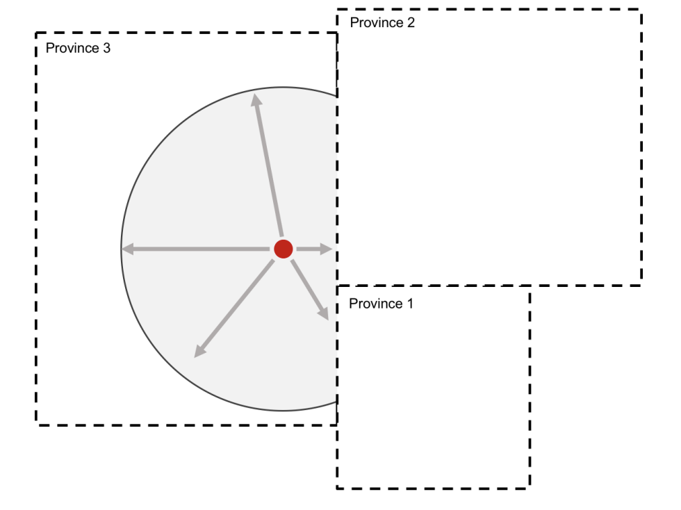
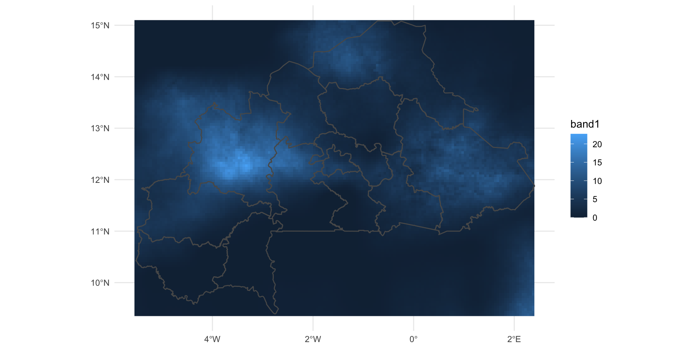
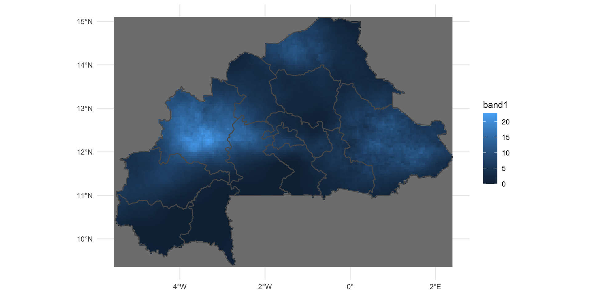

Data Analysis Workshop
Linking health survey data with climate datasets in R
 Matt Gunther - Senior Data Analyst
Matt Gunther - Senior Data Analyst
Devon Kristiansen - Project Manager
Data and Research Question
IPUMS PMA: Fertility outcomes for women in Burkina Faso
Toy GPS data: coordinates for each PMA sample cluster
CHIRPS: Rainfall accumulation relative to local averages
Do rainfall conditions influence women’s short-term family planning decisions?

Setup
Follow these steps to obtain today’s code & publicly available data
Copy the following code chunks into R to load required packages
(Hint: click the clipboard icon inside each chunk to “copy all”)


1 - IPUMS PMA Data
Downloading IPUMS PMA data
Visit the IPUMS PMA data website
- Sample
- Burkina Faso
- Longitudinal
- Female Respondents Only
- Variables
- RESULTFQ
- PANELBIRTH
- PANELWEIGHT
- EAID
- URBAN
Load IPUMS PMA data into R
You’ll receive two files from IPUMS - put both in the data folder where analysis.Rmd is located.
# A tibble: 8,257 × 180
SAMPLE_1 SAMPLE_2 SAMPLE_3 SAMPLE_4 COUNTRY YEAR_1 YEAR_2 YEAR_3 YEAR_4
<int+lbl> <int+lbl> <int+lb> <int+lb> <int+l> <int> <int> <int> <int>
1 85409 [Bur… 85412 [Bur… NA NA 1 [Bur… 2019 2021 NA NA
2 85409 [Bur… 85412 [Bur… NA NA 1 [Bur… 2019 2021 NA NA
3 85409 [Bur… 85412 [Bur… NA NA 1 [Bur… 2019 2021 NA NA
4 85409 [Bur… 85412 [Bur… NA NA 1 [Bur… 2019 2021 NA NA
5 85409 [Bur… 85412 [Bur… NA NA 1 [Bur… 2019 2021 NA NA
6 85409 [Bur… 85412 [Bur… NA NA 1 [Bur… 2019 2021 NA NA
7 85409 [Bur… 85412 [Bur… NA NA 1 [Bur… 2019 2021 NA NA
8 85409 [Bur… 85412 [Bur… NA NA 1 [Bur… 2019 2021 NA NA
9 85409 [Bur… 85412 [Bur… NA NA 1 [Bur… 2019 2021 NA NA
10 85409 [Bur… 85412 [Bur… NA NA 1 [Bur… 2019 2021 NA NA
# … with 8,247 more rows, and 171 more variables: ELIGIBLE_1 <int+lbl>,
# ELIGIBLE_2 <int+lbl>, EAID_1 <dbl>, EAID_2 <dbl>, EAID_3 <dbl>,
# EAID_4 <dbl>, CONSENTFQ_1 <int+lbl>, CONSENTFQ_2 <int+lbl>,
# RESULTFQ_1 <int+lbl>, RESULTFQ_2 <int+lbl>, CROSS_SECTION_1 <int+lbl>,
# CROSS_SECTION_2 <int+lbl>, INTFQMON_1 <int+lbl>, INTFQMON_2 <int+lbl>,
# INTFQYEAR_1 <int+lbl>, INTFQYEAR_2 <int+lbl>, FQINSTID <chr>,
# CONSENTHQ_1 <int+lbl>, CONSENTHQ_2 <int+lbl>, FQWEIGHT_1 <dbl>, …Data format
We’ve selected wide format longitudinal data, so Phase 1 and Phase 2 data are stored in separate columns.
# A tibble: 15 × 3
RESULTFQ_1 RESULTFQ_2 n
<int+lbl> <int+lbl> <int>
1 1 [Completed] 1 [Completed] 5487
2 1 [Completed] 2 [Not at home] 78
3 1 [Completed] 3 [Postponed] 22
4 1 [Completed] 4 [Refused] 66
5 1 [Completed] 5 [Partly completed] 12
6 1 [Completed] 7 [Respondent moved] 15
7 1 [Completed] 10 [Incapacitated] 19
8 1 [Completed] 95 [Not interviewed (female questionnaire)] 4
9 1 [Completed] 96 [Not interviewed (household questionnaire)] 192
10 1 [Completed] 99 [NIU (not in universe)] 399
11 1 [Completed] NA 471
12 5 [Partly completed] 1 [Completed] 4
13 5 [Partly completed] NA 21
14 NA 1 [Completed] 1460
15 NA 5 [Partly completed] 7Questions about IPUMS PMA data?
2- PMA GPS data
About PMA GPS data
PMA uses spatially referenced sample clusters - called “enumeration areas” (EAs) - sampled by probability proportional to population size.
At the beginning of the panel study, 35 households were randomly selected within each EA.
About PMA GPS data
PMA uses spatially referenced sample clusters - called “enumeration areas” (EAs) - sampled by probability proportional to population size.
At the beginning of the panel study, 35 households were randomly selected within each EA.
IPUMS PMA does not disseminate the GPS coordinates for EAs, but you may apply here for access directly from PMA.
Today, we’ll be using falsified GPS coordinates as an example.
About PMA GPS data
PMA uses spatially referenced sample clusters - called “enumeration areas” (EAs) - sampled by probability proportional to population size.
At the beginning of the panel study, 35 households were randomly selected within each EA.
IPUMS PMA does not disseminate the GPS coordinates for EAs, but you may apply here for access directly from PMA.
Today, we’ll be using falsified GPS coordinates as an example.
About PMA GPS data
PMA uses spatially referenced sample clusters - called “enumeration areas” (EAs) - sampled by probability proportional to population size.
At the beginning of the panel study, 35 households were randomly selected within each EA.
IPUMS PMA does not disseminate the GPS coordinates for EAs, but you may apply here for access directly from PMA.
Today, we’ll be using falsified GPS coordinates as an example.
The coordinates represent the centroid of an enumeration area, not the location of any sampled household.

Load PMA GPS data into R
A PMA GPS dataset is a simple CSV file with one row per EA, and columns containing latitude and longitude points.
# A tibble: 167 × 8
PMACC PMAYEAR REGION EAID GPSLONG GPSLAT DATUM SURVEY
<chr> <dbl> <chr> <dbl> <dbl> <dbl> <chr> <chr>
1 BF 2020 8. est 854181006 -0.160 13.4 WGS84 PMA
2 BF 2020 3. centre 854131035 -1.47 12.4 WGS84 PMA
3 BF 2020 6. centre_ouest 854161005 -1.92 11.1 WGS84 PMA
4 BF 2020 10. nord 854201013 -2.54 12.9 WGS84 PMA
5 BF 2020 9. hauts_bassins 854191041 -4.23 11.2 WGS84 PMA
6 BF 2020 2. cascades 854121002 -4.84 10.3 WGS84 PMA
7 BF 2020 6. centre_ouest 854161009 -2.20 12.8 WGS84 PMA
8 BF 2020 8. est 854181005 -0.0319 12.5 WGS84 PMA
9 BF 2020 10. nord 854201005 -1.90 12.9 WGS84 PMA
10 BF 2020 9. hauts_bassins 854191026 -5.24 11.4 WGS84 PMA
# … with 157 more rowsThe column DATUM describes the coordinate reference system: World Geodetic System 1984.
GPS data as a Simple Features Object
The sf (“simple features”) package for R contains many of the same tools you would find in other GIS software
GPS data as a Simple Features Object
The sf (“simple features”) package for R contains many of the same tools you would find in other GIS software
4326 is the EPSG code for World Geodetic System 1984.
Simple feature collection with 167 features and 6 fields
Geometry type: POINT
Dimension: XY
Bounding box: xmin: -5.277929 ymin: 10.29263 xmax: 0.6744602 ymax: 14.21399
Geodetic CRS: WGS 84
# A tibble: 167 × 7
PMACC PMAYEAR REGION EAID DATUM SURVEY geometry
* <chr> <dbl> <chr> <dbl> <chr> <chr> <POINT [°]>
1 BF 2020 8. est 8.54e8 WGS84 PMA (-0.1595212 13.36634)
2 BF 2020 3. centre 8.54e8 WGS84 PMA (-1.467466 12.43239)
3 BF 2020 6. centre_ouest 8.54e8 WGS84 PMA (-1.915129 11.13271)
4 BF 2020 10. nord 8.54e8 WGS84 PMA (-2.542757 12.88571)
5 BF 2020 9. hauts_bassins 8.54e8 WGS84 PMA (-4.232418 11.19971)
6 BF 2020 2. cascades 8.54e8 WGS84 PMA (-4.83967 10.29263)
7 BF 2020 6. centre_ouest 8.54e8 WGS84 PMA (-2.204062 12.75554)
8 BF 2020 8. est 8.54e8 WGS84 PMA (-0.03191096 12.45061)
9 BF 2020 10. nord 8.54e8 WGS84 PMA (-1.895065 12.90935)
10 BF 2020 9. hauts_bassins 8.54e8 WGS84 PMA (-5.239322 11.37056)
# … with 157 more rows
Adding a Shapefile
We need a supplementary shape file to see where each point lies on a map of Burkina Faso.
You only need to specify the folder: R will locate the appropriate file.
Simple feature collection with 13 features and 1 field
Geometry type: MULTIPOLYGON
Dimension: XY
Bounding box: xmin: -5.521112 ymin: 9.393889 xmax: 2.404293 ymax: 15.08511
Geodetic CRS: WGS 84
First 10 features:
ADMIN_NAME geometry
1 Boucle du Mouhoun MULTIPOLYGON (((-3.206306 1...
2 Cascades MULTIPOLYGON (((-5.388849 1...
3 Centre MULTIPOLYGON (((-1.565052 1...
4 Centre-Est MULTIPOLYGON (((-0.2517975 ...
5 Centre-Nord MULTIPOLYGON (((-0.6722373 ...
6 Centre-Ouest MULTIPOLYGON (((-2.547486 1...
7 Centre-Sud MULTIPOLYGON (((-1.470801 1...
8 Est MULTIPOLYGON (((0.06834642 ...
9 Hauts-Bassins MULTIPOLYGON (((-4.483203 1...
10 Nord MULTIPOLYGON (((-2.952616 1...Mapping GPS coordinates
Mapping GPS coordinates
PMA displacement protocol
In fact, these GPS coordinates are not the actual centroid of each EA.

In order to preserve confidentiality, PMA displaces the centroid location of each EA up to 2 km (urban areas) or 5 km (rural areas).
Displacement does not cross admin 1 boundaries.
Meters on a Round Plant
Remember: the geometry of our gps data is defined by arc-degrees, not meters.
If we tried to account displacement in meters without “flattening” our map, the length of one meter vary based on distance from the equator.
Projection to Meters
We’ll use EPSG code 32630 to focus our flat projection around Burkina Faso.
Simple feature collection with 167 features and 6 fields
Geometry type: POINT
Dimension: XY
Bounding box: xmin: 250808.3 ymin: 1138345 xmax: 899207.2 ymax: 1573191
Projected CRS: WGS 84 / UTM zone 30N
# A tibble: 167 × 7
PMACC PMAYEAR REGION EAID DATUM SURVEY geometry
* <chr> <dbl> <chr> <dbl> <chr> <chr> <POINT [m]>
1 BF 2020 8. est 8.54e8 WGS84 PMA (807680.7 1479413)
2 BF 2020 3. centre 8.54e8 WGS84 PMA (666577.8 1374847)
3 BF 2020 6. centre_ouest 8.54e8 WGS84 PMA (618468.7 1230870)
4 BF 2020 10. nord 8.54e8 WGS84 PMA (549607.1 1424541)
5 BF 2020 9. hauts_bassins 8.54e8 WGS84 PMA (365447.7 1238343)
6 BF 2020 2. cascades 8.54e8 WGS84 PMA (298530.9 1138345)
7 BF 2020 6. centre_ouest 8.54e8 WGS84 PMA (586398.8 1410234)
8 BF 2020 8. est 8.54e8 WGS84 PMA (822688.7 1378185)
9 BF 2020 10. nord 8.54e8 WGS84 PMA (619870.7 1427369)
10 BF 2020 9. hauts_bassins 8.54e8 WGS84 PMA (255620.7 1257895)
# … with 157 more rowsThis changes the geometry column to meters [m].
Creating Buffers
To keep things simple in our example, we’ll give every EA a 5 km buffer.
Simple feature collection with 167 features and 6 fields
Geometry type: POLYGON
Dimension: XY
Bounding box: xmin: 245808.3 ymin: 1133345 xmax: 904207.2 ymax: 1578191
Projected CRS: WGS 84 / UTM zone 30N
# A tibble: 167 × 7
PMACC PMAYEAR REGION EAID DATUM SURVEY geometry
* <chr> <dbl> <chr> <dbl> <chr> <chr> <POLYGON [m]>
1 BF 2020 8. est 8.54e8 WGS84 PMA ((812680.7 1479413, 8126…
2 BF 2020 3. centre 8.54e8 WGS84 PMA ((671577.8 1374847, 6715…
3 BF 2020 6. centre_ouest 8.54e8 WGS84 PMA ((623468.7 1230870, 6234…
4 BF 2020 10. nord 8.54e8 WGS84 PMA ((554607.1 1424541, 5546…
5 BF 2020 9. hauts_bassins 8.54e8 WGS84 PMA ((370447.7 1238343, 3704…
6 BF 2020 2. cascades 8.54e8 WGS84 PMA ((303530.9 1138345, 3035…
7 BF 2020 6. centre_ouest 8.54e8 WGS84 PMA ((591398.8 1410234, 5913…
8 BF 2020 8. est 8.54e8 WGS84 PMA ((827688.7 1378185, 8276…
9 BF 2020 10. nord 8.54e8 WGS84 PMA ((624870.7 1427369, 6248…
10 BF 2020 9. hauts_bassins 8.54e8 WGS84 PMA ((260620.7 1257895, 2606…
# … with 157 more rowsNow, geometry contains several points on the circumference of a round polygon.
Intersecting Regional Boundaries

Intersecting Regional Boundaries
Intersecting Regional Boundaries
Back to arc-degrees
Finally, we can return to our original CRS defined by arc-degrees.
Questions about PMA GPS Data?
3 - Mapping Birth Outcomes
Birth outcomes for individuals
Now, we combine pma together with gps_buffer.
The pma variable PANELBIRTH_2 indicates whether each woman gave birth within the year that passed between Phase 1 and Phase 2 of the panel study.
Important: Code 99 represents women who were “not in universe” because they had indicated elsewhere on the survey that they had never given birth.
We can treat these cases as “No”.
Birth outcomes by EA
Where are the enumeration areas where more women gave birth than average?
# A tibble: 167 × 3
ea urban birth_prop
<dbl> <lgl> <dbl>
1 854111001 FALSE 0.228
2 854111002 TRUE 0.0469
3 854111003 TRUE 0.190
4 854111004 FALSE 0.260
5 854111005 FALSE 0.304
6 854111006 TRUE 0.107
7 854111007 FALSE 0.218
8 854111008 FALSE 0.209
9 854111009 FALSE 0.118
10 854111010 TRUE 0.148
# … with 157 more rowsBirth outcomes by EA
Where are the enumeration areas where more women gave birth than average?
# A tibble: 167 × 4
ea urban birth_prop ntile
<dbl> <lgl> <dbl> <int>
1 854111001 FALSE 0.228 2
2 854111002 TRUE 0.0469 1
3 854111003 TRUE 0.190 2
4 854111004 FALSE 0.260 2
5 854111005 FALSE 0.304 2
6 854111006 TRUE 0.107 1
7 854111007 FALSE 0.218 2
8 854111008 FALSE 0.209 2
9 854111009 FALSE 0.118 1
10 854111010 TRUE 0.148 2
# … with 157 more rowsBirth outcomes by EA
Where are the enumeration areas where more women gave birth than average?
# A tibble: 167 × 5
ea urban birth_prop ntile many_births
<dbl> <lgl> <dbl> <int> <lgl>
1 854111001 FALSE 0.228 2 TRUE
2 854111002 TRUE 0.0469 1 FALSE
3 854111003 TRUE 0.190 2 TRUE
4 854111004 FALSE 0.260 2 TRUE
5 854111005 FALSE 0.304 2 TRUE
6 854111006 TRUE 0.107 1 FALSE
7 854111007 FALSE 0.218 2 TRUE
8 854111008 FALSE 0.209 2 TRUE
9 854111009 FALSE 0.118 1 FALSE
10 854111010 TRUE 0.148 2 TRUE
# … with 157 more rowsMerging GPS data
Use full_join to merge all rows of ea_summary to gps_buffer.
If you list gps_buffer first, the result will be another Simple Features object.
Simple feature collection with 167 features and 5 fields
Geometry type: POLYGON
Dimension: XY
Bounding box: xmin: -5.32361 ymin: 10.24743 xmax: 0.7204144 ymax: 14.25915
Geodetic CRS: WGS 84
# A tibble: 167 × 6
ea urban birth_prop ntile many_births geometry
<dbl> <lgl> <dbl> <int> <lgl> <POLYGON [°]>
1 854111012 TRUE 0.253 2 TRUE ((-3.856566 11.95614, -3.856747…
2 854111006 TRUE 0.107 1 FALSE ((-3.02159 11.87068, -3.021778 …
3 854111002 TRUE 0.0469 1 FALSE ((-3.202698 12.88706, -3.202886…
4 854111007 FALSE 0.218 2 TRUE ((-2.790317 12.89155, -2.790508…
5 854111011 FALSE 0.150 2 TRUE ((-3.474768 12.52022, -3.474953…
6 854111008 FALSE 0.209 2 TRUE ((-3.864223 13.27047, -3.864404…
7 854191039 TRUE 0.196 2 TRUE ((-3.235588 11.51495, -3.235775…
8 854111003 TRUE 0.190 2 TRUE ((-3.322203 12.54741, -3.322389…
9 854191008 FALSE 0.190 2 TRUE ((-4.30137 11.91649, -4.301547 …
10 854111010 TRUE 0.148 2 TRUE ((-3.205145 12.61123, -3.205333…
# … with 157 more rowsMapping Birth Outcomes by EA
Questions about mapping?
4 - CHIRPS: Annual rainfall summary
Downloading CHIRPS data
What is a Raster File?
When you open your download, you’ll find one file per day in our selected space and time period.
The .tif file format is a high-resolution image.
For CHRIPS, each pixel represents mm rainfall in an area 0.05 degrees longitude by 0.05 degrees latitude.
Load Raster Data into R
The terra package reads Raster files.
You could simply read the data from a single day, and map the result.
class : SpatRaster
dimensions : 115, 159, 1 (nrow, ncol, nlyr)
resolution : 0.05, 0.05 (x, y)
extent : -5.549997, 2.400003, 9.349999, 15.1 (xmin, xmax, ymin, ymax)
coord. ref. : lon/lat WGS 84 (EPSG:4326)
source : 20200605.tif
name : 20200605
This output summaries the .tif file for June 5, 2020. Notice that there are:
- 115 rows of pixels
- 159 columns of pixels
- 1 layer named
20211028
June 5, 2020
June 5, 2020
June 5, 2020
June 5, 2020
Aggregation
Ultimately, you’ll want to work with .tif images from many days at the same time.
For this workshop, I’ve removed all files outside of the range June 1 to Oct 1.
$`2001`
[1] "data/chirps//20010601.tif" "data/chirps//20010602.tif"
[3] "data/chirps//20010603.tif" "data/chirps//20010604.tif"
[5] "data/chirps//20010605.tif" "data/chirps//20010606.tif"
[7] "data/chirps//20010607.tif" "data/chirps//20010608.tif"
[9] "data/chirps//20010609.tif" "data/chirps//20010610.tif"
[11] "data/chirps//20010611.tif" "data/chirps//20010612.tif"
[13] "data/chirps//20010613.tif" "data/chirps//20010614.tif"
[15] "data/chirps//20010615.tif" "data/chirps//20010616.tif"
[17] "data/chirps//20010617.tif" "data/chirps//20010618.tif"
[19] "data/chirps//20010619.tif" "data/chirps//20010620.tif"
[21] "data/chirps//20010621.tif" "data/chirps//20010622.tif"
[23] "data/chirps//20010623.tif" "data/chirps//20010624.tif"
[25] "data/chirps//20010625.tif" "data/chirps//20010626.tif"
[27] "data/chirps//20010627.tif" "data/chirps//20010628.tif"
[29] "data/chirps//20010629.tif" "data/chirps//20010630.tif"
[31] "data/chirps//20010701.tif" "data/chirps//20010702.tif"
[33] "data/chirps//20010703.tif" "data/chirps//20010704.tif"
[35] "data/chirps//20010705.tif" "data/chirps//20010706.tif"
[37] "data/chirps//20010707.tif" "data/chirps//20010708.tif"
[39] "data/chirps//20010709.tif" "data/chirps//20010710.tif"
[41] "data/chirps//20010711.tif" "data/chirps//20010712.tif"
[43] "data/chirps//20010713.tif" "data/chirps//20010714.tif"
[45] "data/chirps//20010715.tif" "data/chirps//20010716.tif"
[47] "data/chirps//20010717.tif" "data/chirps//20010718.tif"
[49] "data/chirps//20010719.tif" "data/chirps//20010720.tif"
[51] "data/chirps//20010721.tif" "data/chirps//20010722.tif"
[53] "data/chirps//20010723.tif" "data/chirps//20010724.tif"
[55] "data/chirps//20010725.tif" "data/chirps//20010726.tif"
[57] "data/chirps//20010727.tif" "data/chirps//20010728.tif"
[59] "data/chirps//20010729.tif" "data/chirps//20010730.tif"
[61] "data/chirps//20010731.tif" "data/chirps//20010801.tif"
[63] "data/chirps//20010802.tif" "data/chirps//20010803.tif"
[65] "data/chirps//20010804.tif" "data/chirps//20010805.tif"
[67] "data/chirps//20010806.tif" "data/chirps//20010807.tif"
[69] "data/chirps//20010808.tif" "data/chirps//20010809.tif"
[71] "data/chirps//20010810.tif" "data/chirps//20010811.tif"
[73] "data/chirps//20010812.tif" "data/chirps//20010813.tif"
[75] "data/chirps//20010814.tif" "data/chirps//20010815.tif"
[77] "data/chirps//20010816.tif" "data/chirps//20010817.tif"
[79] "data/chirps//20010818.tif" "data/chirps//20010819.tif"
[81] "data/chirps//20010820.tif" "data/chirps//20010821.tif"
[83] "data/chirps//20010822.tif" "data/chirps//20010823.tif"
[85] "data/chirps//20010824.tif" "data/chirps//20010825.tif"
[87] "data/chirps//20010826.tif" "data/chirps//20010827.tif"
[89] "data/chirps//20010828.tif" "data/chirps//20010829.tif"
[91] "data/chirps//20010830.tif" "data/chirps//20010831.tif"
[93] "data/chirps//20010901.tif" "data/chirps//20010902.tif"
[95] "data/chirps//20010903.tif" "data/chirps//20010904.tif"
[97] "data/chirps//20010905.tif" "data/chirps//20010906.tif"
[99] "data/chirps//20010907.tif" "data/chirps//20010908.tif"
[101] "data/chirps//20010909.tif" "data/chirps//20010910.tif"
[103] "data/chirps//20010911.tif" "data/chirps//20010912.tif"
[105] "data/chirps//20010913.tif" "data/chirps//20010914.tif"
[107] "data/chirps//20010915.tif" "data/chirps//20010916.tif"
[109] "data/chirps//20010917.tif" "data/chirps//20010918.tif"
[111] "data/chirps//20010919.tif" "data/chirps//20010920.tif"
[113] "data/chirps//20010921.tif" "data/chirps//20010922.tif"
[115] "data/chirps//20010923.tif" "data/chirps//20010924.tif"
[117] "data/chirps//20010925.tif" "data/chirps//20010926.tif"
[119] "data/chirps//20010927.tif" "data/chirps//20010928.tif"
[121] "data/chirps//20010929.tif" "data/chirps//20010930.tif"
$`2002`
[1] "data/chirps//20020601.tif" "data/chirps//20020602.tif"
[3] "data/chirps//20020603.tif" "data/chirps//20020604.tif"
[5] "data/chirps//20020605.tif" "data/chirps//20020606.tif"
[7] "data/chirps//20020607.tif" "data/chirps//20020608.tif"
[9] "data/chirps//20020609.tif" "data/chirps//20020610.tif"
[11] "data/chirps//20020611.tif" "data/chirps//20020612.tif"
[13] "data/chirps//20020613.tif" "data/chirps//20020614.tif"
[15] "data/chirps//20020615.tif" "data/chirps//20020616.tif"
[17] "data/chirps//20020617.tif" "data/chirps//20020618.tif"
[19] "data/chirps//20020619.tif" "data/chirps//20020620.tif"
[21] "data/chirps//20020621.tif" "data/chirps//20020622.tif"
[23] "data/chirps//20020623.tif" "data/chirps//20020624.tif"
[25] "data/chirps//20020625.tif" "data/chirps//20020626.tif"
[27] "data/chirps//20020627.tif" "data/chirps//20020628.tif"
[29] "data/chirps//20020629.tif" "data/chirps//20020630.tif"
[31] "data/chirps//20020701.tif" "data/chirps//20020702.tif"
[33] "data/chirps//20020703.tif" "data/chirps//20020704.tif"
[35] "data/chirps//20020705.tif" "data/chirps//20020706.tif"
[37] "data/chirps//20020707.tif" "data/chirps//20020708.tif"
[39] "data/chirps//20020709.tif" "data/chirps//20020710.tif"
[41] "data/chirps//20020711.tif" "data/chirps//20020712.tif"
[43] "data/chirps//20020713.tif" "data/chirps//20020714.tif"
[45] "data/chirps//20020715.tif" "data/chirps//20020716.tif"
[47] "data/chirps//20020717.tif" "data/chirps//20020718.tif"
[49] "data/chirps//20020719.tif" "data/chirps//20020720.tif"
[51] "data/chirps//20020721.tif" "data/chirps//20020722.tif"
[53] "data/chirps//20020723.tif" "data/chirps//20020724.tif"
[55] "data/chirps//20020725.tif" "data/chirps//20020726.tif"
[57] "data/chirps//20020727.tif" "data/chirps//20020728.tif"
[59] "data/chirps//20020729.tif" "data/chirps//20020730.tif"
[61] "data/chirps//20020731.tif" "data/chirps//20020801.tif"
[63] "data/chirps//20020802.tif" "data/chirps//20020803.tif"
[65] "data/chirps//20020804.tif" "data/chirps//20020805.tif"
[67] "data/chirps//20020806.tif" "data/chirps//20020807.tif"
[69] "data/chirps//20020808.tif" "data/chirps//20020809.tif"
[71] "data/chirps//20020810.tif" "data/chirps//20020811.tif"
[73] "data/chirps//20020812.tif" "data/chirps//20020813.tif"
[75] "data/chirps//20020814.tif" "data/chirps//20020815.tif"
[77] "data/chirps//20020816.tif" "data/chirps//20020817.tif"
[79] "data/chirps//20020818.tif" "data/chirps//20020819.tif"
[81] "data/chirps//20020820.tif" "data/chirps//20020821.tif"
[83] "data/chirps//20020822.tif" "data/chirps//20020823.tif"
[85] "data/chirps//20020824.tif" "data/chirps//20020825.tif"
[87] "data/chirps//20020826.tif" "data/chirps//20020827.tif"
[89] "data/chirps//20020828.tif" "data/chirps//20020829.tif"
[91] "data/chirps//20020830.tif" "data/chirps//20020831.tif"
[93] "data/chirps//20020901.tif" "data/chirps//20020902.tif"
[95] "data/chirps//20020903.tif" "data/chirps//20020904.tif"
[97] "data/chirps//20020905.tif" "data/chirps//20020906.tif"
[99] "data/chirps//20020907.tif" "data/chirps//20020908.tif"
[101] "data/chirps//20020909.tif" "data/chirps//20020910.tif"
[103] "data/chirps//20020911.tif" "data/chirps//20020912.tif"
[105] "data/chirps//20020913.tif" "data/chirps//20020914.tif"
[107] "data/chirps//20020915.tif" "data/chirps//20020916.tif"
[109] "data/chirps//20020917.tif" "data/chirps//20020918.tif"
[111] "data/chirps//20020919.tif" "data/chirps//20020920.tif"
[113] "data/chirps//20020921.tif" "data/chirps//20020922.tif"
[115] "data/chirps//20020923.tif" "data/chirps//20020924.tif"
[117] "data/chirps//20020925.tif" "data/chirps//20020926.tif"
[119] "data/chirps//20020927.tif" "data/chirps//20020928.tif"
[121] "data/chirps//20020929.tif" "data/chirps//20020930.tif"
$`2003`
[1] "data/chirps//20030601.tif" "data/chirps//20030602.tif"
[3] "data/chirps//20030603.tif" "data/chirps//20030604.tif"
[5] "data/chirps//20030605.tif" "data/chirps//20030606.tif"
[7] "data/chirps//20030607.tif" "data/chirps//20030608.tif"
[9] "data/chirps//20030609.tif" "data/chirps//20030610.tif"
[11] "data/chirps//20030611.tif" "data/chirps//20030612.tif"
[13] "data/chirps//20030613.tif" "data/chirps//20030614.tif"
[15] "data/chirps//20030615.tif" "data/chirps//20030616.tif"
[17] "data/chirps//20030617.tif" "data/chirps//20030618.tif"
[19] "data/chirps//20030619.tif" "data/chirps//20030620.tif"
[21] "data/chirps//20030621.tif" "data/chirps//20030622.tif"
[23] "data/chirps//20030623.tif" "data/chirps//20030624.tif"
[25] "data/chirps//20030625.tif" "data/chirps//20030626.tif"
[27] "data/chirps//20030627.tif" "data/chirps//20030628.tif"
[29] "data/chirps//20030629.tif" "data/chirps//20030630.tif"
[31] "data/chirps//20030701.tif" "data/chirps//20030702.tif"
[33] "data/chirps//20030703.tif" "data/chirps//20030704.tif"
[35] "data/chirps//20030705.tif" "data/chirps//20030706.tif"
[37] "data/chirps//20030707.tif" "data/chirps//20030708.tif"
[39] "data/chirps//20030709.tif" "data/chirps//20030710.tif"
[41] "data/chirps//20030711.tif" "data/chirps//20030712.tif"
[43] "data/chirps//20030713.tif" "data/chirps//20030714.tif"
[45] "data/chirps//20030715.tif" "data/chirps//20030716.tif"
[47] "data/chirps//20030717.tif" "data/chirps//20030718.tif"
[49] "data/chirps//20030719.tif" "data/chirps//20030720.tif"
[51] "data/chirps//20030721.tif" "data/chirps//20030722.tif"
[53] "data/chirps//20030723.tif" "data/chirps//20030724.tif"
[55] "data/chirps//20030725.tif" "data/chirps//20030726.tif"
[57] "data/chirps//20030727.tif" "data/chirps//20030728.tif"
[59] "data/chirps//20030729.tif" "data/chirps//20030730.tif"
[61] "data/chirps//20030731.tif" "data/chirps//20030801.tif"
[63] "data/chirps//20030802.tif" "data/chirps//20030803.tif"
[65] "data/chirps//20030804.tif" "data/chirps//20030805.tif"
[67] "data/chirps//20030806.tif" "data/chirps//20030807.tif"
[69] "data/chirps//20030808.tif" "data/chirps//20030809.tif"
[71] "data/chirps//20030810.tif" "data/chirps//20030811.tif"
[73] "data/chirps//20030812.tif" "data/chirps//20030813.tif"
[75] "data/chirps//20030814.tif" "data/chirps//20030815.tif"
[77] "data/chirps//20030816.tif" "data/chirps//20030817.tif"
[79] "data/chirps//20030818.tif" "data/chirps//20030819.tif"
[81] "data/chirps//20030820.tif" "data/chirps//20030821.tif"
[83] "data/chirps//20030822.tif" "data/chirps//20030823.tif"
[85] "data/chirps//20030824.tif" "data/chirps//20030825.tif"
[87] "data/chirps//20030826.tif" "data/chirps//20030827.tif"
[89] "data/chirps//20030828.tif" "data/chirps//20030829.tif"
[91] "data/chirps//20030830.tif" "data/chirps//20030831.tif"
[93] "data/chirps//20030901.tif" "data/chirps//20030902.tif"
[95] "data/chirps//20030903.tif" "data/chirps//20030904.tif"
[97] "data/chirps//20030905.tif" "data/chirps//20030906.tif"
[99] "data/chirps//20030907.tif" "data/chirps//20030908.tif"
[101] "data/chirps//20030909.tif" "data/chirps//20030910.tif"
[103] "data/chirps//20030911.tif" "data/chirps//20030912.tif"
[105] "data/chirps//20030913.tif" "data/chirps//20030914.tif"
[107] "data/chirps//20030915.tif" "data/chirps//20030916.tif"
[109] "data/chirps//20030917.tif" "data/chirps//20030918.tif"
[111] "data/chirps//20030919.tif" "data/chirps//20030920.tif"
[113] "data/chirps//20030921.tif" "data/chirps//20030922.tif"
[115] "data/chirps//20030923.tif" "data/chirps//20030924.tif"
[117] "data/chirps//20030925.tif" "data/chirps//20030926.tif"
[119] "data/chirps//20030927.tif" "data/chirps//20030928.tif"
[121] "data/chirps//20030929.tif" "data/chirps//20030930.tif"
$`2004`
[1] "data/chirps//20040601.tif" "data/chirps//20040602.tif"
[3] "data/chirps//20040603.tif" "data/chirps//20040604.tif"
[5] "data/chirps//20040605.tif" "data/chirps//20040606.tif"
[7] "data/chirps//20040607.tif" "data/chirps//20040608.tif"
[9] "data/chirps//20040609.tif" "data/chirps//20040610.tif"
[11] "data/chirps//20040611.tif" "data/chirps//20040612.tif"
[13] "data/chirps//20040613.tif" "data/chirps//20040614.tif"
[15] "data/chirps//20040615.tif" "data/chirps//20040616.tif"
[17] "data/chirps//20040617.tif" "data/chirps//20040618.tif"
[19] "data/chirps//20040619.tif" "data/chirps//20040620.tif"
[21] "data/chirps//20040621.tif" "data/chirps//20040622.tif"
[23] "data/chirps//20040623.tif" "data/chirps//20040624.tif"
[25] "data/chirps//20040625.tif" "data/chirps//20040626.tif"
[27] "data/chirps//20040627.tif" "data/chirps//20040628.tif"
[29] "data/chirps//20040629.tif" "data/chirps//20040630.tif"
[31] "data/chirps//20040701.tif" "data/chirps//20040702.tif"
[33] "data/chirps//20040703.tif" "data/chirps//20040704.tif"
[35] "data/chirps//20040705.tif" "data/chirps//20040706.tif"
[37] "data/chirps//20040707.tif" "data/chirps//20040708.tif"
[39] "data/chirps//20040709.tif" "data/chirps//20040710.tif"
[41] "data/chirps//20040711.tif" "data/chirps//20040712.tif"
[43] "data/chirps//20040713.tif" "data/chirps//20040714.tif"
[45] "data/chirps//20040715.tif" "data/chirps//20040716.tif"
[47] "data/chirps//20040717.tif" "data/chirps//20040718.tif"
[49] "data/chirps//20040719.tif" "data/chirps//20040720.tif"
[51] "data/chirps//20040721.tif" "data/chirps//20040722.tif"
[53] "data/chirps//20040723.tif" "data/chirps//20040724.tif"
[55] "data/chirps//20040725.tif" "data/chirps//20040726.tif"
[57] "data/chirps//20040727.tif" "data/chirps//20040728.tif"
[59] "data/chirps//20040729.tif" "data/chirps//20040730.tif"
[61] "data/chirps//20040731.tif" "data/chirps//20040801.tif"
[63] "data/chirps//20040802.tif" "data/chirps//20040803.tif"
[65] "data/chirps//20040804.tif" "data/chirps//20040805.tif"
[67] "data/chirps//20040806.tif" "data/chirps//20040807.tif"
[69] "data/chirps//20040808.tif" "data/chirps//20040809.tif"
[71] "data/chirps//20040810.tif" "data/chirps//20040811.tif"
[73] "data/chirps//20040812.tif" "data/chirps//20040813.tif"
[75] "data/chirps//20040814.tif" "data/chirps//20040815.tif"
[77] "data/chirps//20040816.tif" "data/chirps//20040817.tif"
[79] "data/chirps//20040818.tif" "data/chirps//20040819.tif"
[81] "data/chirps//20040820.tif" "data/chirps//20040821.tif"
[83] "data/chirps//20040822.tif" "data/chirps//20040823.tif"
[85] "data/chirps//20040824.tif" "data/chirps//20040825.tif"
[87] "data/chirps//20040826.tif" "data/chirps//20040827.tif"
[89] "data/chirps//20040828.tif" "data/chirps//20040829.tif"
[91] "data/chirps//20040830.tif" "data/chirps//20040831.tif"
[93] "data/chirps//20040901.tif" "data/chirps//20040902.tif"
[95] "data/chirps//20040903.tif" "data/chirps//20040904.tif"
[97] "data/chirps//20040905.tif" "data/chirps//20040906.tif"
[99] "data/chirps//20040907.tif" "data/chirps//20040908.tif"
[101] "data/chirps//20040909.tif" "data/chirps//20040910.tif"
[103] "data/chirps//20040911.tif" "data/chirps//20040912.tif"
[105] "data/chirps//20040913.tif" "data/chirps//20040914.tif"
[107] "data/chirps//20040915.tif" "data/chirps//20040916.tif"
[109] "data/chirps//20040917.tif" "data/chirps//20040918.tif"
[111] "data/chirps//20040919.tif" "data/chirps//20040920.tif"
[113] "data/chirps//20040921.tif" "data/chirps//20040922.tif"
[115] "data/chirps//20040923.tif" "data/chirps//20040924.tif"
[117] "data/chirps//20040925.tif" "data/chirps//20040926.tif"
[119] "data/chirps//20040927.tif" "data/chirps//20040928.tif"
[121] "data/chirps//20040929.tif" "data/chirps//20040930.tif"
$`2005`
[1] "data/chirps//20050601.tif" "data/chirps//20050602.tif"
[3] "data/chirps//20050603.tif" "data/chirps//20050604.tif"
[5] "data/chirps//20050605.tif" "data/chirps//20050606.tif"
[7] "data/chirps//20050607.tif" "data/chirps//20050608.tif"
[9] "data/chirps//20050609.tif" "data/chirps//20050610.tif"
[11] "data/chirps//20050611.tif" "data/chirps//20050612.tif"
[13] "data/chirps//20050613.tif" "data/chirps//20050614.tif"
[15] "data/chirps//20050615.tif" "data/chirps//20050616.tif"
[17] "data/chirps//20050617.tif" "data/chirps//20050618.tif"
[19] "data/chirps//20050619.tif" "data/chirps//20050620.tif"
[21] "data/chirps//20050621.tif" "data/chirps//20050622.tif"
[23] "data/chirps//20050623.tif" "data/chirps//20050624.tif"
[25] "data/chirps//20050625.tif" "data/chirps//20050626.tif"
[27] "data/chirps//20050627.tif" "data/chirps//20050628.tif"
[29] "data/chirps//20050629.tif" "data/chirps//20050630.tif"
[31] "data/chirps//20050701.tif" "data/chirps//20050702.tif"
[33] "data/chirps//20050703.tif" "data/chirps//20050704.tif"
[35] "data/chirps//20050705.tif" "data/chirps//20050706.tif"
[37] "data/chirps//20050707.tif" "data/chirps//20050708.tif"
[39] "data/chirps//20050709.tif" "data/chirps//20050710.tif"
[41] "data/chirps//20050711.tif" "data/chirps//20050712.tif"
[43] "data/chirps//20050713.tif" "data/chirps//20050714.tif"
[45] "data/chirps//20050715.tif" "data/chirps//20050716.tif"
[47] "data/chirps//20050717.tif" "data/chirps//20050718.tif"
[49] "data/chirps//20050719.tif" "data/chirps//20050720.tif"
[51] "data/chirps//20050721.tif" "data/chirps//20050722.tif"
[53] "data/chirps//20050723.tif" "data/chirps//20050724.tif"
[55] "data/chirps//20050725.tif" "data/chirps//20050726.tif"
[57] "data/chirps//20050727.tif" "data/chirps//20050728.tif"
[59] "data/chirps//20050729.tif" "data/chirps//20050730.tif"
[61] "data/chirps//20050731.tif" "data/chirps//20050801.tif"
[63] "data/chirps//20050802.tif" "data/chirps//20050803.tif"
[65] "data/chirps//20050804.tif" "data/chirps//20050805.tif"
[67] "data/chirps//20050806.tif" "data/chirps//20050807.tif"
[69] "data/chirps//20050808.tif" "data/chirps//20050809.tif"
[71] "data/chirps//20050810.tif" "data/chirps//20050811.tif"
[73] "data/chirps//20050812.tif" "data/chirps//20050813.tif"
[75] "data/chirps//20050814.tif" "data/chirps//20050815.tif"
[77] "data/chirps//20050816.tif" "data/chirps//20050817.tif"
[79] "data/chirps//20050818.tif" "data/chirps//20050819.tif"
[81] "data/chirps//20050820.tif" "data/chirps//20050821.tif"
[83] "data/chirps//20050822.tif" "data/chirps//20050823.tif"
[85] "data/chirps//20050824.tif" "data/chirps//20050825.tif"
[87] "data/chirps//20050826.tif" "data/chirps//20050827.tif"
[89] "data/chirps//20050828.tif" "data/chirps//20050829.tif"
[91] "data/chirps//20050830.tif" "data/chirps//20050831.tif"
[93] "data/chirps//20050901.tif" "data/chirps//20050902.tif"
[95] "data/chirps//20050903.tif" "data/chirps//20050904.tif"
[97] "data/chirps//20050905.tif" "data/chirps//20050906.tif"
[99] "data/chirps//20050907.tif" "data/chirps//20050908.tif"
[101] "data/chirps//20050909.tif" "data/chirps//20050910.tif"
[103] "data/chirps//20050911.tif" "data/chirps//20050912.tif"
[105] "data/chirps//20050913.tif" "data/chirps//20050914.tif"
[107] "data/chirps//20050915.tif" "data/chirps//20050916.tif"
[109] "data/chirps//20050917.tif" "data/chirps//20050918.tif"
[111] "data/chirps//20050919.tif" "data/chirps//20050920.tif"
[113] "data/chirps//20050921.tif" "data/chirps//20050922.tif"
[115] "data/chirps//20050923.tif" "data/chirps//20050924.tif"
[117] "data/chirps//20050925.tif" "data/chirps//20050926.tif"
[119] "data/chirps//20050927.tif" "data/chirps//20050928.tif"
[121] "data/chirps//20050929.tif" "data/chirps//20050930.tif"
$`2006`
[1] "data/chirps//20060601.tif" "data/chirps//20060602.tif"
[3] "data/chirps//20060603.tif" "data/chirps//20060604.tif"
[5] "data/chirps//20060605.tif" "data/chirps//20060606.tif"
[7] "data/chirps//20060607.tif" "data/chirps//20060608.tif"
[9] "data/chirps//20060609.tif" "data/chirps//20060610.tif"
[11] "data/chirps//20060611.tif" "data/chirps//20060612.tif"
[13] "data/chirps//20060613.tif" "data/chirps//20060614.tif"
[15] "data/chirps//20060615.tif" "data/chirps//20060616.tif"
[17] "data/chirps//20060617.tif" "data/chirps//20060618.tif"
[19] "data/chirps//20060619.tif" "data/chirps//20060620.tif"
[21] "data/chirps//20060621.tif" "data/chirps//20060622.tif"
[23] "data/chirps//20060623.tif" "data/chirps//20060624.tif"
[25] "data/chirps//20060625.tif" "data/chirps//20060626.tif"
[27] "data/chirps//20060627.tif" "data/chirps//20060628.tif"
[29] "data/chirps//20060629.tif" "data/chirps//20060630.tif"
[31] "data/chirps//20060701.tif" "data/chirps//20060702.tif"
[33] "data/chirps//20060703.tif" "data/chirps//20060704.tif"
[35] "data/chirps//20060705.tif" "data/chirps//20060706.tif"
[37] "data/chirps//20060707.tif" "data/chirps//20060708.tif"
[39] "data/chirps//20060709.tif" "data/chirps//20060710.tif"
[41] "data/chirps//20060711.tif" "data/chirps//20060712.tif"
[43] "data/chirps//20060713.tif" "data/chirps//20060714.tif"
[45] "data/chirps//20060715.tif" "data/chirps//20060716.tif"
[47] "data/chirps//20060717.tif" "data/chirps//20060718.tif"
[49] "data/chirps//20060719.tif" "data/chirps//20060720.tif"
[51] "data/chirps//20060721.tif" "data/chirps//20060722.tif"
[53] "data/chirps//20060723.tif" "data/chirps//20060724.tif"
[55] "data/chirps//20060725.tif" "data/chirps//20060726.tif"
[57] "data/chirps//20060727.tif" "data/chirps//20060728.tif"
[59] "data/chirps//20060729.tif" "data/chirps//20060730.tif"
[61] "data/chirps//20060731.tif" "data/chirps//20060801.tif"
[63] "data/chirps//20060802.tif" "data/chirps//20060803.tif"
[65] "data/chirps//20060804.tif" "data/chirps//20060805.tif"
[67] "data/chirps//20060806.tif" "data/chirps//20060807.tif"
[69] "data/chirps//20060808.tif" "data/chirps//20060809.tif"
[71] "data/chirps//20060810.tif" "data/chirps//20060811.tif"
[73] "data/chirps//20060812.tif" "data/chirps//20060813.tif"
[75] "data/chirps//20060814.tif" "data/chirps//20060815.tif"
[77] "data/chirps//20060816.tif" "data/chirps//20060817.tif"
[79] "data/chirps//20060818.tif" "data/chirps//20060819.tif"
[81] "data/chirps//20060820.tif" "data/chirps//20060821.tif"
[83] "data/chirps//20060822.tif" "data/chirps//20060823.tif"
[85] "data/chirps//20060824.tif" "data/chirps//20060825.tif"
[87] "data/chirps//20060826.tif" "data/chirps//20060827.tif"
[89] "data/chirps//20060828.tif" "data/chirps//20060829.tif"
[91] "data/chirps//20060830.tif" "data/chirps//20060831.tif"
[93] "data/chirps//20060901.tif" "data/chirps//20060902.tif"
[95] "data/chirps//20060903.tif" "data/chirps//20060904.tif"
[97] "data/chirps//20060905.tif" "data/chirps//20060906.tif"
[99] "data/chirps//20060907.tif" "data/chirps//20060908.tif"
[101] "data/chirps//20060909.tif" "data/chirps//20060910.tif"
[103] "data/chirps//20060911.tif" "data/chirps//20060912.tif"
[105] "data/chirps//20060913.tif" "data/chirps//20060914.tif"
[107] "data/chirps//20060915.tif" "data/chirps//20060916.tif"
[109] "data/chirps//20060917.tif" "data/chirps//20060918.tif"
[111] "data/chirps//20060919.tif" "data/chirps//20060920.tif"
[113] "data/chirps//20060921.tif" "data/chirps//20060922.tif"
[115] "data/chirps//20060923.tif" "data/chirps//20060924.tif"
[117] "data/chirps//20060925.tif" "data/chirps//20060926.tif"
[119] "data/chirps//20060927.tif" "data/chirps//20060928.tif"
[121] "data/chirps//20060929.tif" "data/chirps//20060930.tif"
$`2007`
[1] "data/chirps//20070601.tif" "data/chirps//20070602.tif"
[3] "data/chirps//20070603.tif" "data/chirps//20070604.tif"
[5] "data/chirps//20070605.tif" "data/chirps//20070606.tif"
[7] "data/chirps//20070607.tif" "data/chirps//20070608.tif"
[9] "data/chirps//20070609.tif" "data/chirps//20070610.tif"
[11] "data/chirps//20070611.tif" "data/chirps//20070612.tif"
[13] "data/chirps//20070613.tif" "data/chirps//20070614.tif"
[15] "data/chirps//20070615.tif" "data/chirps//20070616.tif"
[17] "data/chirps//20070617.tif" "data/chirps//20070618.tif"
[19] "data/chirps//20070619.tif" "data/chirps//20070620.tif"
[21] "data/chirps//20070621.tif" "data/chirps//20070622.tif"
[23] "data/chirps//20070623.tif" "data/chirps//20070624.tif"
[25] "data/chirps//20070625.tif" "data/chirps//20070626.tif"
[27] "data/chirps//20070627.tif" "data/chirps//20070628.tif"
[29] "data/chirps//20070629.tif" "data/chirps//20070630.tif"
[31] "data/chirps//20070701.tif" "data/chirps//20070702.tif"
[33] "data/chirps//20070703.tif" "data/chirps//20070704.tif"
[35] "data/chirps//20070705.tif" "data/chirps//20070706.tif"
[37] "data/chirps//20070707.tif" "data/chirps//20070708.tif"
[39] "data/chirps//20070709.tif" "data/chirps//20070710.tif"
[41] "data/chirps//20070711.tif" "data/chirps//20070712.tif"
[43] "data/chirps//20070713.tif" "data/chirps//20070714.tif"
[45] "data/chirps//20070715.tif" "data/chirps//20070716.tif"
[47] "data/chirps//20070717.tif" "data/chirps//20070718.tif"
[49] "data/chirps//20070719.tif" "data/chirps//20070720.tif"
[51] "data/chirps//20070721.tif" "data/chirps//20070722.tif"
[53] "data/chirps//20070723.tif" "data/chirps//20070724.tif"
[55] "data/chirps//20070725.tif" "data/chirps//20070726.tif"
[57] "data/chirps//20070727.tif" "data/chirps//20070728.tif"
[59] "data/chirps//20070729.tif" "data/chirps//20070730.tif"
[61] "data/chirps//20070731.tif" "data/chirps//20070801.tif"
[63] "data/chirps//20070802.tif" "data/chirps//20070803.tif"
[65] "data/chirps//20070804.tif" "data/chirps//20070805.tif"
[67] "data/chirps//20070806.tif" "data/chirps//20070807.tif"
[69] "data/chirps//20070808.tif" "data/chirps//20070809.tif"
[71] "data/chirps//20070810.tif" "data/chirps//20070811.tif"
[73] "data/chirps//20070812.tif" "data/chirps//20070813.tif"
[75] "data/chirps//20070814.tif" "data/chirps//20070815.tif"
[77] "data/chirps//20070816.tif" "data/chirps//20070817.tif"
[79] "data/chirps//20070818.tif" "data/chirps//20070819.tif"
[81] "data/chirps//20070820.tif" "data/chirps//20070821.tif"
[83] "data/chirps//20070822.tif" "data/chirps//20070823.tif"
[85] "data/chirps//20070824.tif" "data/chirps//20070825.tif"
[87] "data/chirps//20070826.tif" "data/chirps//20070827.tif"
[89] "data/chirps//20070828.tif" "data/chirps//20070829.tif"
[91] "data/chirps//20070830.tif" "data/chirps//20070831.tif"
[93] "data/chirps//20070901.tif" "data/chirps//20070902.tif"
[95] "data/chirps//20070903.tif" "data/chirps//20070904.tif"
[97] "data/chirps//20070905.tif" "data/chirps//20070906.tif"
[99] "data/chirps//20070907.tif" "data/chirps//20070908.tif"
[101] "data/chirps//20070909.tif" "data/chirps//20070910.tif"
[103] "data/chirps//20070911.tif" "data/chirps//20070912.tif"
[105] "data/chirps//20070913.tif" "data/chirps//20070914.tif"
[107] "data/chirps//20070915.tif" "data/chirps//20070916.tif"
[109] "data/chirps//20070917.tif" "data/chirps//20070918.tif"
[111] "data/chirps//20070919.tif" "data/chirps//20070920.tif"
[113] "data/chirps//20070921.tif" "data/chirps//20070922.tif"
[115] "data/chirps//20070923.tif" "data/chirps//20070924.tif"
[117] "data/chirps//20070925.tif" "data/chirps//20070926.tif"
[119] "data/chirps//20070927.tif" "data/chirps//20070928.tif"
[121] "data/chirps//20070929.tif" "data/chirps//20070930.tif"
$`2008`
[1] "data/chirps//20080601.tif" "data/chirps//20080602.tif"
[3] "data/chirps//20080603.tif" "data/chirps//20080604.tif"
[5] "data/chirps//20080605.tif" "data/chirps//20080606.tif"
[7] "data/chirps//20080607.tif" "data/chirps//20080608.tif"
[9] "data/chirps//20080609.tif" "data/chirps//20080610.tif"
[11] "data/chirps//20080611.tif" "data/chirps//20080612.tif"
[13] "data/chirps//20080613.tif" "data/chirps//20080614.tif"
[15] "data/chirps//20080615.tif" "data/chirps//20080616.tif"
[17] "data/chirps//20080617.tif" "data/chirps//20080618.tif"
[19] "data/chirps//20080619.tif" "data/chirps//20080620.tif"
[21] "data/chirps//20080621.tif" "data/chirps//20080622.tif"
[23] "data/chirps//20080623.tif" "data/chirps//20080624.tif"
[25] "data/chirps//20080625.tif" "data/chirps//20080626.tif"
[27] "data/chirps//20080627.tif" "data/chirps//20080628.tif"
[29] "data/chirps//20080629.tif" "data/chirps//20080630.tif"
[31] "data/chirps//20080701.tif" "data/chirps//20080702.tif"
[33] "data/chirps//20080703.tif" "data/chirps//20080704.tif"
[35] "data/chirps//20080705.tif" "data/chirps//20080706.tif"
[37] "data/chirps//20080707.tif" "data/chirps//20080708.tif"
[39] "data/chirps//20080709.tif" "data/chirps//20080710.tif"
[41] "data/chirps//20080711.tif" "data/chirps//20080712.tif"
[43] "data/chirps//20080713.tif" "data/chirps//20080714.tif"
[45] "data/chirps//20080715.tif" "data/chirps//20080716.tif"
[47] "data/chirps//20080717.tif" "data/chirps//20080718.tif"
[49] "data/chirps//20080719.tif" "data/chirps//20080720.tif"
[51] "data/chirps//20080721.tif" "data/chirps//20080722.tif"
[53] "data/chirps//20080723.tif" "data/chirps//20080724.tif"
[55] "data/chirps//20080725.tif" "data/chirps//20080726.tif"
[57] "data/chirps//20080727.tif" "data/chirps//20080728.tif"
[59] "data/chirps//20080729.tif" "data/chirps//20080730.tif"
[61] "data/chirps//20080731.tif" "data/chirps//20080801.tif"
[63] "data/chirps//20080802.tif" "data/chirps//20080803.tif"
[65] "data/chirps//20080804.tif" "data/chirps//20080805.tif"
[67] "data/chirps//20080806.tif" "data/chirps//20080807.tif"
[69] "data/chirps//20080808.tif" "data/chirps//20080809.tif"
[71] "data/chirps//20080810.tif" "data/chirps//20080811.tif"
[73] "data/chirps//20080812.tif" "data/chirps//20080813.tif"
[75] "data/chirps//20080814.tif" "data/chirps//20080815.tif"
[77] "data/chirps//20080816.tif" "data/chirps//20080817.tif"
[79] "data/chirps//20080818.tif" "data/chirps//20080819.tif"
[81] "data/chirps//20080820.tif" "data/chirps//20080821.tif"
[83] "data/chirps//20080822.tif" "data/chirps//20080823.tif"
[85] "data/chirps//20080824.tif" "data/chirps//20080825.tif"
[87] "data/chirps//20080826.tif" "data/chirps//20080827.tif"
[89] "data/chirps//20080828.tif" "data/chirps//20080829.tif"
[91] "data/chirps//20080830.tif" "data/chirps//20080831.tif"
[93] "data/chirps//20080901.tif" "data/chirps//20080902.tif"
[95] "data/chirps//20080903.tif" "data/chirps//20080904.tif"
[97] "data/chirps//20080905.tif" "data/chirps//20080906.tif"
[99] "data/chirps//20080907.tif" "data/chirps//20080908.tif"
[101] "data/chirps//20080909.tif" "data/chirps//20080910.tif"
[103] "data/chirps//20080911.tif" "data/chirps//20080912.tif"
[105] "data/chirps//20080913.tif" "data/chirps//20080914.tif"
[107] "data/chirps//20080915.tif" "data/chirps//20080916.tif"
[109] "data/chirps//20080917.tif" "data/chirps//20080918.tif"
[111] "data/chirps//20080919.tif" "data/chirps//20080920.tif"
[113] "data/chirps//20080921.tif" "data/chirps//20080922.tif"
[115] "data/chirps//20080923.tif" "data/chirps//20080924.tif"
[117] "data/chirps//20080925.tif" "data/chirps//20080926.tif"
[119] "data/chirps//20080927.tif" "data/chirps//20080928.tif"
[121] "data/chirps//20080929.tif" "data/chirps//20080930.tif"
$`2009`
[1] "data/chirps//20090601.tif" "data/chirps//20090602.tif"
[3] "data/chirps//20090603.tif" "data/chirps//20090604.tif"
[5] "data/chirps//20090605.tif" "data/chirps//20090606.tif"
[7] "data/chirps//20090607.tif" "data/chirps//20090608.tif"
[9] "data/chirps//20090609.tif" "data/chirps//20090610.tif"
[11] "data/chirps//20090611.tif" "data/chirps//20090612.tif"
[13] "data/chirps//20090613.tif" "data/chirps//20090614.tif"
[15] "data/chirps//20090615.tif" "data/chirps//20090616.tif"
[17] "data/chirps//20090617.tif" "data/chirps//20090618.tif"
[19] "data/chirps//20090619.tif" "data/chirps//20090620.tif"
[21] "data/chirps//20090621.tif" "data/chirps//20090622.tif"
[23] "data/chirps//20090623.tif" "data/chirps//20090624.tif"
[25] "data/chirps//20090625.tif" "data/chirps//20090626.tif"
[27] "data/chirps//20090627.tif" "data/chirps//20090628.tif"
[29] "data/chirps//20090629.tif" "data/chirps//20090630.tif"
[31] "data/chirps//20090701.tif" "data/chirps//20090702.tif"
[33] "data/chirps//20090703.tif" "data/chirps//20090704.tif"
[35] "data/chirps//20090705.tif" "data/chirps//20090706.tif"
[37] "data/chirps//20090707.tif" "data/chirps//20090708.tif"
[39] "data/chirps//20090709.tif" "data/chirps//20090710.tif"
[41] "data/chirps//20090711.tif" "data/chirps//20090712.tif"
[43] "data/chirps//20090713.tif" "data/chirps//20090714.tif"
[45] "data/chirps//20090715.tif" "data/chirps//20090716.tif"
[47] "data/chirps//20090717.tif" "data/chirps//20090718.tif"
[49] "data/chirps//20090719.tif" "data/chirps//20090720.tif"
[51] "data/chirps//20090721.tif" "data/chirps//20090722.tif"
[53] "data/chirps//20090723.tif" "data/chirps//20090724.tif"
[55] "data/chirps//20090725.tif" "data/chirps//20090726.tif"
[57] "data/chirps//20090727.tif" "data/chirps//20090728.tif"
[59] "data/chirps//20090729.tif" "data/chirps//20090730.tif"
[61] "data/chirps//20090731.tif" "data/chirps//20090801.tif"
[63] "data/chirps//20090802.tif" "data/chirps//20090803.tif"
[65] "data/chirps//20090804.tif" "data/chirps//20090805.tif"
[67] "data/chirps//20090806.tif" "data/chirps//20090807.tif"
[69] "data/chirps//20090808.tif" "data/chirps//20090809.tif"
[71] "data/chirps//20090810.tif" "data/chirps//20090811.tif"
[73] "data/chirps//20090812.tif" "data/chirps//20090813.tif"
[75] "data/chirps//20090814.tif" "data/chirps//20090815.tif"
[77] "data/chirps//20090816.tif" "data/chirps//20090817.tif"
[79] "data/chirps//20090818.tif" "data/chirps//20090819.tif"
[81] "data/chirps//20090820.tif" "data/chirps//20090821.tif"
[83] "data/chirps//20090822.tif" "data/chirps//20090823.tif"
[85] "data/chirps//20090824.tif" "data/chirps//20090825.tif"
[87] "data/chirps//20090826.tif" "data/chirps//20090827.tif"
[89] "data/chirps//20090828.tif" "data/chirps//20090829.tif"
[91] "data/chirps//20090830.tif" "data/chirps//20090831.tif"
[93] "data/chirps//20090901.tif" "data/chirps//20090902.tif"
[95] "data/chirps//20090903.tif" "data/chirps//20090904.tif"
[97] "data/chirps//20090905.tif" "data/chirps//20090906.tif"
[99] "data/chirps//20090907.tif" "data/chirps//20090908.tif"
[101] "data/chirps//20090909.tif" "data/chirps//20090910.tif"
[103] "data/chirps//20090911.tif" "data/chirps//20090912.tif"
[105] "data/chirps//20090913.tif" "data/chirps//20090914.tif"
[107] "data/chirps//20090915.tif" "data/chirps//20090916.tif"
[109] "data/chirps//20090917.tif" "data/chirps//20090918.tif"
[111] "data/chirps//20090919.tif" "data/chirps//20090920.tif"
[113] "data/chirps//20090921.tif" "data/chirps//20090922.tif"
[115] "data/chirps//20090923.tif" "data/chirps//20090924.tif"
[117] "data/chirps//20090925.tif" "data/chirps//20090926.tif"
[119] "data/chirps//20090927.tif" "data/chirps//20090928.tif"
[121] "data/chirps//20090929.tif" "data/chirps//20090930.tif"
$`2010`
[1] "data/chirps//20100601.tif" "data/chirps//20100602.tif"
[3] "data/chirps//20100603.tif" "data/chirps//20100604.tif"
[5] "data/chirps//20100605.tif" "data/chirps//20100606.tif"
[7] "data/chirps//20100607.tif" "data/chirps//20100608.tif"
[9] "data/chirps//20100609.tif" "data/chirps//20100610.tif"
[11] "data/chirps//20100611.tif" "data/chirps//20100612.tif"
[13] "data/chirps//20100613.tif" "data/chirps//20100614.tif"
[15] "data/chirps//20100615.tif" "data/chirps//20100616.tif"
[17] "data/chirps//20100617.tif" "data/chirps//20100618.tif"
[19] "data/chirps//20100619.tif" "data/chirps//20100620.tif"
[21] "data/chirps//20100621.tif" "data/chirps//20100622.tif"
[23] "data/chirps//20100623.tif" "data/chirps//20100624.tif"
[25] "data/chirps//20100625.tif" "data/chirps//20100626.tif"
[27] "data/chirps//20100627.tif" "data/chirps//20100628.tif"
[29] "data/chirps//20100629.tif" "data/chirps//20100630.tif"
[31] "data/chirps//20100701.tif" "data/chirps//20100702.tif"
[33] "data/chirps//20100703.tif" "data/chirps//20100704.tif"
[35] "data/chirps//20100705.tif" "data/chirps//20100706.tif"
[37] "data/chirps//20100707.tif" "data/chirps//20100708.tif"
[39] "data/chirps//20100709.tif" "data/chirps//20100710.tif"
[41] "data/chirps//20100711.tif" "data/chirps//20100712.tif"
[43] "data/chirps//20100713.tif" "data/chirps//20100714.tif"
[45] "data/chirps//20100715.tif" "data/chirps//20100716.tif"
[47] "data/chirps//20100717.tif" "data/chirps//20100718.tif"
[49] "data/chirps//20100719.tif" "data/chirps//20100720.tif"
[51] "data/chirps//20100721.tif" "data/chirps//20100722.tif"
[53] "data/chirps//20100723.tif" "data/chirps//20100724.tif"
[55] "data/chirps//20100725.tif" "data/chirps//20100726.tif"
[57] "data/chirps//20100727.tif" "data/chirps//20100728.tif"
[59] "data/chirps//20100729.tif" "data/chirps//20100730.tif"
[61] "data/chirps//20100731.tif" "data/chirps//20100801.tif"
[63] "data/chirps//20100802.tif" "data/chirps//20100803.tif"
[65] "data/chirps//20100804.tif" "data/chirps//20100805.tif"
[67] "data/chirps//20100806.tif" "data/chirps//20100807.tif"
[69] "data/chirps//20100808.tif" "data/chirps//20100809.tif"
[71] "data/chirps//20100810.tif" "data/chirps//20100811.tif"
[73] "data/chirps//20100812.tif" "data/chirps//20100813.tif"
[75] "data/chirps//20100814.tif" "data/chirps//20100815.tif"
[77] "data/chirps//20100816.tif" "data/chirps//20100817.tif"
[79] "data/chirps//20100818.tif" "data/chirps//20100819.tif"
[81] "data/chirps//20100820.tif" "data/chirps//20100821.tif"
[83] "data/chirps//20100822.tif" "data/chirps//20100823.tif"
[85] "data/chirps//20100824.tif" "data/chirps//20100825.tif"
[87] "data/chirps//20100826.tif" "data/chirps//20100827.tif"
[89] "data/chirps//20100828.tif" "data/chirps//20100829.tif"
[91] "data/chirps//20100830.tif" "data/chirps//20100831.tif"
[93] "data/chirps//20100901.tif" "data/chirps//20100902.tif"
[95] "data/chirps//20100903.tif" "data/chirps//20100904.tif"
[97] "data/chirps//20100905.tif" "data/chirps//20100906.tif"
[99] "data/chirps//20100907.tif" "data/chirps//20100908.tif"
[101] "data/chirps//20100909.tif" "data/chirps//20100910.tif"
[103] "data/chirps//20100911.tif" "data/chirps//20100912.tif"
[105] "data/chirps//20100913.tif" "data/chirps//20100914.tif"
[107] "data/chirps//20100915.tif" "data/chirps//20100916.tif"
[109] "data/chirps//20100917.tif" "data/chirps//20100918.tif"
[111] "data/chirps//20100919.tif" "data/chirps//20100920.tif"
[113] "data/chirps//20100921.tif" "data/chirps//20100922.tif"
[115] "data/chirps//20100923.tif" "data/chirps//20100924.tif"
[117] "data/chirps//20100925.tif" "data/chirps//20100926.tif"
[119] "data/chirps//20100927.tif" "data/chirps//20100928.tif"
[121] "data/chirps//20100929.tif" "data/chirps//20100930.tif"
$`2011`
[1] "data/chirps//20110601.tif" "data/chirps//20110602.tif"
[3] "data/chirps//20110603.tif" "data/chirps//20110604.tif"
[5] "data/chirps//20110605.tif" "data/chirps//20110606.tif"
[7] "data/chirps//20110607.tif" "data/chirps//20110608.tif"
[9] "data/chirps//20110609.tif" "data/chirps//20110610.tif"
[11] "data/chirps//20110611.tif" "data/chirps//20110612.tif"
[13] "data/chirps//20110613.tif" "data/chirps//20110614.tif"
[15] "data/chirps//20110615.tif" "data/chirps//20110616.tif"
[17] "data/chirps//20110617.tif" "data/chirps//20110618.tif"
[19] "data/chirps//20110619.tif" "data/chirps//20110620.tif"
[21] "data/chirps//20110621.tif" "data/chirps//20110622.tif"
[23] "data/chirps//20110623.tif" "data/chirps//20110624.tif"
[25] "data/chirps//20110625.tif" "data/chirps//20110626.tif"
[27] "data/chirps//20110627.tif" "data/chirps//20110628.tif"
[29] "data/chirps//20110629.tif" "data/chirps//20110630.tif"
[31] "data/chirps//20110701.tif" "data/chirps//20110702.tif"
[33] "data/chirps//20110703.tif" "data/chirps//20110704.tif"
[35] "data/chirps//20110705.tif" "data/chirps//20110706.tif"
[37] "data/chirps//20110707.tif" "data/chirps//20110708.tif"
[39] "data/chirps//20110709.tif" "data/chirps//20110710.tif"
[41] "data/chirps//20110711.tif" "data/chirps//20110712.tif"
[43] "data/chirps//20110713.tif" "data/chirps//20110714.tif"
[45] "data/chirps//20110715.tif" "data/chirps//20110716.tif"
[47] "data/chirps//20110717.tif" "data/chirps//20110718.tif"
[49] "data/chirps//20110719.tif" "data/chirps//20110720.tif"
[51] "data/chirps//20110721.tif" "data/chirps//20110722.tif"
[53] "data/chirps//20110723.tif" "data/chirps//20110724.tif"
[55] "data/chirps//20110725.tif" "data/chirps//20110726.tif"
[57] "data/chirps//20110727.tif" "data/chirps//20110728.tif"
[59] "data/chirps//20110729.tif" "data/chirps//20110730.tif"
[61] "data/chirps//20110731.tif" "data/chirps//20110801.tif"
[63] "data/chirps//20110802.tif" "data/chirps//20110803.tif"
[65] "data/chirps//20110804.tif" "data/chirps//20110805.tif"
[67] "data/chirps//20110806.tif" "data/chirps//20110807.tif"
[69] "data/chirps//20110808.tif" "data/chirps//20110809.tif"
[71] "data/chirps//20110810.tif" "data/chirps//20110811.tif"
[73] "data/chirps//20110812.tif" "data/chirps//20110813.tif"
[75] "data/chirps//20110814.tif" "data/chirps//20110815.tif"
[77] "data/chirps//20110816.tif" "data/chirps//20110817.tif"
[79] "data/chirps//20110818.tif" "data/chirps//20110819.tif"
[81] "data/chirps//20110820.tif" "data/chirps//20110821.tif"
[83] "data/chirps//20110822.tif" "data/chirps//20110823.tif"
[85] "data/chirps//20110824.tif" "data/chirps//20110825.tif"
[87] "data/chirps//20110826.tif" "data/chirps//20110827.tif"
[89] "data/chirps//20110828.tif" "data/chirps//20110829.tif"
[91] "data/chirps//20110830.tif" "data/chirps//20110831.tif"
[93] "data/chirps//20110901.tif" "data/chirps//20110902.tif"
[95] "data/chirps//20110903.tif" "data/chirps//20110904.tif"
[97] "data/chirps//20110905.tif" "data/chirps//20110906.tif"
[99] "data/chirps//20110907.tif" "data/chirps//20110908.tif"
[101] "data/chirps//20110909.tif" "data/chirps//20110910.tif"
[103] "data/chirps//20110911.tif" "data/chirps//20110912.tif"
[105] "data/chirps//20110913.tif" "data/chirps//20110914.tif"
[107] "data/chirps//20110915.tif" "data/chirps//20110916.tif"
[109] "data/chirps//20110917.tif" "data/chirps//20110918.tif"
[111] "data/chirps//20110919.tif" "data/chirps//20110920.tif"
[113] "data/chirps//20110921.tif" "data/chirps//20110922.tif"
[115] "data/chirps//20110923.tif" "data/chirps//20110924.tif"
[117] "data/chirps//20110925.tif" "data/chirps//20110926.tif"
[119] "data/chirps//20110927.tif" "data/chirps//20110928.tif"
[121] "data/chirps//20110929.tif" "data/chirps//20110930.tif"
$`2012`
[1] "data/chirps//20120601.tif" "data/chirps//20120602.tif"
[3] "data/chirps//20120603.tif" "data/chirps//20120604.tif"
[5] "data/chirps//20120605.tif" "data/chirps//20120606.tif"
[7] "data/chirps//20120607.tif" "data/chirps//20120608.tif"
[9] "data/chirps//20120609.tif" "data/chirps//20120610.tif"
[11] "data/chirps//20120611.tif" "data/chirps//20120612.tif"
[13] "data/chirps//20120613.tif" "data/chirps//20120614.tif"
[15] "data/chirps//20120615.tif" "data/chirps//20120616.tif"
[17] "data/chirps//20120617.tif" "data/chirps//20120618.tif"
[19] "data/chirps//20120619.tif" "data/chirps//20120620.tif"
[21] "data/chirps//20120621.tif" "data/chirps//20120622.tif"
[23] "data/chirps//20120623.tif" "data/chirps//20120624.tif"
[25] "data/chirps//20120625.tif" "data/chirps//20120626.tif"
[27] "data/chirps//20120627.tif" "data/chirps//20120628.tif"
[29] "data/chirps//20120629.tif" "data/chirps//20120630.tif"
[31] "data/chirps//20120701.tif" "data/chirps//20120702.tif"
[33] "data/chirps//20120703.tif" "data/chirps//20120704.tif"
[35] "data/chirps//20120705.tif" "data/chirps//20120706.tif"
[37] "data/chirps//20120707.tif" "data/chirps//20120708.tif"
[39] "data/chirps//20120709.tif" "data/chirps//20120710.tif"
[41] "data/chirps//20120711.tif" "data/chirps//20120712.tif"
[43] "data/chirps//20120713.tif" "data/chirps//20120714.tif"
[45] "data/chirps//20120715.tif" "data/chirps//20120716.tif"
[47] "data/chirps//20120717.tif" "data/chirps//20120718.tif"
[49] "data/chirps//20120719.tif" "data/chirps//20120720.tif"
[51] "data/chirps//20120721.tif" "data/chirps//20120722.tif"
[53] "data/chirps//20120723.tif" "data/chirps//20120724.tif"
[55] "data/chirps//20120725.tif" "data/chirps//20120726.tif"
[57] "data/chirps//20120727.tif" "data/chirps//20120728.tif"
[59] "data/chirps//20120729.tif" "data/chirps//20120730.tif"
[61] "data/chirps//20120731.tif" "data/chirps//20120801.tif"
[63] "data/chirps//20120802.tif" "data/chirps//20120803.tif"
[65] "data/chirps//20120804.tif" "data/chirps//20120805.tif"
[67] "data/chirps//20120806.tif" "data/chirps//20120807.tif"
[69] "data/chirps//20120808.tif" "data/chirps//20120809.tif"
[71] "data/chirps//20120810.tif" "data/chirps//20120811.tif"
[73] "data/chirps//20120812.tif" "data/chirps//20120813.tif"
[75] "data/chirps//20120814.tif" "data/chirps//20120815.tif"
[77] "data/chirps//20120816.tif" "data/chirps//20120817.tif"
[79] "data/chirps//20120818.tif" "data/chirps//20120819.tif"
[81] "data/chirps//20120820.tif" "data/chirps//20120821.tif"
[83] "data/chirps//20120822.tif" "data/chirps//20120823.tif"
[85] "data/chirps//20120824.tif" "data/chirps//20120825.tif"
[87] "data/chirps//20120826.tif" "data/chirps//20120827.tif"
[89] "data/chirps//20120828.tif" "data/chirps//20120829.tif"
[91] "data/chirps//20120830.tif" "data/chirps//20120831.tif"
[93] "data/chirps//20120901.tif" "data/chirps//20120902.tif"
[95] "data/chirps//20120903.tif" "data/chirps//20120904.tif"
[97] "data/chirps//20120905.tif" "data/chirps//20120906.tif"
[99] "data/chirps//20120907.tif" "data/chirps//20120908.tif"
[101] "data/chirps//20120909.tif" "data/chirps//20120910.tif"
[103] "data/chirps//20120911.tif" "data/chirps//20120912.tif"
[105] "data/chirps//20120913.tif" "data/chirps//20120914.tif"
[107] "data/chirps//20120915.tif" "data/chirps//20120916.tif"
[109] "data/chirps//20120917.tif" "data/chirps//20120918.tif"
[111] "data/chirps//20120919.tif" "data/chirps//20120920.tif"
[113] "data/chirps//20120921.tif" "data/chirps//20120922.tif"
[115] "data/chirps//20120923.tif" "data/chirps//20120924.tif"
[117] "data/chirps//20120925.tif" "data/chirps//20120926.tif"
[119] "data/chirps//20120927.tif" "data/chirps//20120928.tif"
[121] "data/chirps//20120929.tif" "data/chirps//20120930.tif"
$`2013`
[1] "data/chirps//20130601.tif" "data/chirps//20130602.tif"
[3] "data/chirps//20130603.tif" "data/chirps//20130604.tif"
[5] "data/chirps//20130605.tif" "data/chirps//20130606.tif"
[7] "data/chirps//20130607.tif" "data/chirps//20130608.tif"
[9] "data/chirps//20130609.tif" "data/chirps//20130610.tif"
[11] "data/chirps//20130611.tif" "data/chirps//20130612.tif"
[13] "data/chirps//20130613.tif" "data/chirps//20130614.tif"
[15] "data/chirps//20130615.tif" "data/chirps//20130616.tif"
[17] "data/chirps//20130617.tif" "data/chirps//20130618.tif"
[19] "data/chirps//20130619.tif" "data/chirps//20130620.tif"
[21] "data/chirps//20130621.tif" "data/chirps//20130622.tif"
[23] "data/chirps//20130623.tif" "data/chirps//20130624.tif"
[25] "data/chirps//20130625.tif" "data/chirps//20130626.tif"
[27] "data/chirps//20130627.tif" "data/chirps//20130628.tif"
[29] "data/chirps//20130629.tif" "data/chirps//20130630.tif"
[31] "data/chirps//20130701.tif" "data/chirps//20130702.tif"
[33] "data/chirps//20130703.tif" "data/chirps//20130704.tif"
[35] "data/chirps//20130705.tif" "data/chirps//20130706.tif"
[37] "data/chirps//20130707.tif" "data/chirps//20130708.tif"
[39] "data/chirps//20130709.tif" "data/chirps//20130710.tif"
[41] "data/chirps//20130711.tif" "data/chirps//20130712.tif"
[43] "data/chirps//20130713.tif" "data/chirps//20130714.tif"
[45] "data/chirps//20130715.tif" "data/chirps//20130716.tif"
[47] "data/chirps//20130717.tif" "data/chirps//20130718.tif"
[49] "data/chirps//20130719.tif" "data/chirps//20130720.tif"
[51] "data/chirps//20130721.tif" "data/chirps//20130722.tif"
[53] "data/chirps//20130723.tif" "data/chirps//20130724.tif"
[55] "data/chirps//20130725.tif" "data/chirps//20130726.tif"
[57] "data/chirps//20130727.tif" "data/chirps//20130728.tif"
[59] "data/chirps//20130729.tif" "data/chirps//20130730.tif"
[61] "data/chirps//20130731.tif" "data/chirps//20130801.tif"
[63] "data/chirps//20130802.tif" "data/chirps//20130803.tif"
[65] "data/chirps//20130804.tif" "data/chirps//20130805.tif"
[67] "data/chirps//20130806.tif" "data/chirps//20130807.tif"
[69] "data/chirps//20130808.tif" "data/chirps//20130809.tif"
[71] "data/chirps//20130810.tif" "data/chirps//20130811.tif"
[73] "data/chirps//20130812.tif" "data/chirps//20130813.tif"
[75] "data/chirps//20130814.tif" "data/chirps//20130815.tif"
[77] "data/chirps//20130816.tif" "data/chirps//20130817.tif"
[79] "data/chirps//20130818.tif" "data/chirps//20130819.tif"
[81] "data/chirps//20130820.tif" "data/chirps//20130821.tif"
[83] "data/chirps//20130822.tif" "data/chirps//20130823.tif"
[85] "data/chirps//20130824.tif" "data/chirps//20130825.tif"
[87] "data/chirps//20130826.tif" "data/chirps//20130827.tif"
[89] "data/chirps//20130828.tif" "data/chirps//20130829.tif"
[91] "data/chirps//20130830.tif" "data/chirps//20130831.tif"
[93] "data/chirps//20130901.tif" "data/chirps//20130902.tif"
[95] "data/chirps//20130903.tif" "data/chirps//20130904.tif"
[97] "data/chirps//20130905.tif" "data/chirps//20130906.tif"
[99] "data/chirps//20130907.tif" "data/chirps//20130908.tif"
[101] "data/chirps//20130909.tif" "data/chirps//20130910.tif"
[103] "data/chirps//20130911.tif" "data/chirps//20130912.tif"
[105] "data/chirps//20130913.tif" "data/chirps//20130914.tif"
[107] "data/chirps//20130915.tif" "data/chirps//20130916.tif"
[109] "data/chirps//20130917.tif" "data/chirps//20130918.tif"
[111] "data/chirps//20130919.tif" "data/chirps//20130920.tif"
[113] "data/chirps//20130921.tif" "data/chirps//20130922.tif"
[115] "data/chirps//20130923.tif" "data/chirps//20130924.tif"
[117] "data/chirps//20130925.tif" "data/chirps//20130926.tif"
[119] "data/chirps//20130927.tif" "data/chirps//20130928.tif"
[121] "data/chirps//20130929.tif" "data/chirps//20130930.tif"
$`2014`
[1] "data/chirps//20140601.tif" "data/chirps//20140602.tif"
[3] "data/chirps//20140603.tif" "data/chirps//20140604.tif"
[5] "data/chirps//20140605.tif" "data/chirps//20140606.tif"
[7] "data/chirps//20140607.tif" "data/chirps//20140608.tif"
[9] "data/chirps//20140609.tif" "data/chirps//20140610.tif"
[11] "data/chirps//20140611.tif" "data/chirps//20140612.tif"
[13] "data/chirps//20140613.tif" "data/chirps//20140614.tif"
[15] "data/chirps//20140615.tif" "data/chirps//20140616.tif"
[17] "data/chirps//20140617.tif" "data/chirps//20140618.tif"
[19] "data/chirps//20140619.tif" "data/chirps//20140620.tif"
[21] "data/chirps//20140621.tif" "data/chirps//20140622.tif"
[23] "data/chirps//20140623.tif" "data/chirps//20140624.tif"
[25] "data/chirps//20140625.tif" "data/chirps//20140626.tif"
[27] "data/chirps//20140627.tif" "data/chirps//20140628.tif"
[29] "data/chirps//20140629.tif" "data/chirps//20140630.tif"
[31] "data/chirps//20140701.tif" "data/chirps//20140702.tif"
[33] "data/chirps//20140703.tif" "data/chirps//20140704.tif"
[35] "data/chirps//20140705.tif" "data/chirps//20140706.tif"
[37] "data/chirps//20140707.tif" "data/chirps//20140708.tif"
[39] "data/chirps//20140709.tif" "data/chirps//20140710.tif"
[41] "data/chirps//20140711.tif" "data/chirps//20140712.tif"
[43] "data/chirps//20140713.tif" "data/chirps//20140714.tif"
[45] "data/chirps//20140715.tif" "data/chirps//20140716.tif"
[47] "data/chirps//20140717.tif" "data/chirps//20140718.tif"
[49] "data/chirps//20140719.tif" "data/chirps//20140720.tif"
[51] "data/chirps//20140721.tif" "data/chirps//20140722.tif"
[53] "data/chirps//20140723.tif" "data/chirps//20140724.tif"
[55] "data/chirps//20140725.tif" "data/chirps//20140726.tif"
[57] "data/chirps//20140727.tif" "data/chirps//20140728.tif"
[59] "data/chirps//20140729.tif" "data/chirps//20140730.tif"
[61] "data/chirps//20140731.tif" "data/chirps//20140801.tif"
[63] "data/chirps//20140802.tif" "data/chirps//20140803.tif"
[65] "data/chirps//20140804.tif" "data/chirps//20140805.tif"
[67] "data/chirps//20140806.tif" "data/chirps//20140807.tif"
[69] "data/chirps//20140808.tif" "data/chirps//20140809.tif"
[71] "data/chirps//20140810.tif" "data/chirps//20140811.tif"
[73] "data/chirps//20140812.tif" "data/chirps//20140813.tif"
[75] "data/chirps//20140814.tif" "data/chirps//20140815.tif"
[77] "data/chirps//20140816.tif" "data/chirps//20140817.tif"
[79] "data/chirps//20140818.tif" "data/chirps//20140819.tif"
[81] "data/chirps//20140820.tif" "data/chirps//20140821.tif"
[83] "data/chirps//20140822.tif" "data/chirps//20140823.tif"
[85] "data/chirps//20140824.tif" "data/chirps//20140825.tif"
[87] "data/chirps//20140826.tif" "data/chirps//20140827.tif"
[89] "data/chirps//20140828.tif" "data/chirps//20140829.tif"
[91] "data/chirps//20140830.tif" "data/chirps//20140831.tif"
[93] "data/chirps//20140901.tif" "data/chirps//20140902.tif"
[95] "data/chirps//20140903.tif" "data/chirps//20140904.tif"
[97] "data/chirps//20140905.tif" "data/chirps//20140906.tif"
[99] "data/chirps//20140907.tif" "data/chirps//20140908.tif"
[101] "data/chirps//20140909.tif" "data/chirps//20140910.tif"
[103] "data/chirps//20140911.tif" "data/chirps//20140912.tif"
[105] "data/chirps//20140913.tif" "data/chirps//20140914.tif"
[107] "data/chirps//20140915.tif" "data/chirps//20140916.tif"
[109] "data/chirps//20140917.tif" "data/chirps//20140918.tif"
[111] "data/chirps//20140919.tif" "data/chirps//20140920.tif"
[113] "data/chirps//20140921.tif" "data/chirps//20140922.tif"
[115] "data/chirps//20140923.tif" "data/chirps//20140924.tif"
[117] "data/chirps//20140925.tif" "data/chirps//20140926.tif"
[119] "data/chirps//20140927.tif" "data/chirps//20140928.tif"
[121] "data/chirps//20140929.tif" "data/chirps//20140930.tif"
$`2015`
[1] "data/chirps//20150601.tif" "data/chirps//20150602.tif"
[3] "data/chirps//20150603.tif" "data/chirps//20150604.tif"
[5] "data/chirps//20150605.tif" "data/chirps//20150606.tif"
[7] "data/chirps//20150607.tif" "data/chirps//20150608.tif"
[9] "data/chirps//20150609.tif" "data/chirps//20150610.tif"
[11] "data/chirps//20150611.tif" "data/chirps//20150612.tif"
[13] "data/chirps//20150613.tif" "data/chirps//20150614.tif"
[15] "data/chirps//20150615.tif" "data/chirps//20150616.tif"
[17] "data/chirps//20150617.tif" "data/chirps//20150618.tif"
[19] "data/chirps//20150619.tif" "data/chirps//20150620.tif"
[21] "data/chirps//20150621.tif" "data/chirps//20150622.tif"
[23] "data/chirps//20150623.tif" "data/chirps//20150624.tif"
[25] "data/chirps//20150625.tif" "data/chirps//20150626.tif"
[27] "data/chirps//20150627.tif" "data/chirps//20150628.tif"
[29] "data/chirps//20150629.tif" "data/chirps//20150630.tif"
[31] "data/chirps//20150701.tif" "data/chirps//20150702.tif"
[33] "data/chirps//20150703.tif" "data/chirps//20150704.tif"
[35] "data/chirps//20150705.tif" "data/chirps//20150706.tif"
[37] "data/chirps//20150707.tif" "data/chirps//20150708.tif"
[39] "data/chirps//20150709.tif" "data/chirps//20150710.tif"
[41] "data/chirps//20150711.tif" "data/chirps//20150712.tif"
[43] "data/chirps//20150713.tif" "data/chirps//20150714.tif"
[45] "data/chirps//20150715.tif" "data/chirps//20150716.tif"
[47] "data/chirps//20150717.tif" "data/chirps//20150718.tif"
[49] "data/chirps//20150719.tif" "data/chirps//20150720.tif"
[51] "data/chirps//20150721.tif" "data/chirps//20150722.tif"
[53] "data/chirps//20150723.tif" "data/chirps//20150724.tif"
[55] "data/chirps//20150725.tif" "data/chirps//20150726.tif"
[57] "data/chirps//20150727.tif" "data/chirps//20150728.tif"
[59] "data/chirps//20150729.tif" "data/chirps//20150730.tif"
[61] "data/chirps//20150731.tif" "data/chirps//20150801.tif"
[63] "data/chirps//20150802.tif" "data/chirps//20150803.tif"
[65] "data/chirps//20150804.tif" "data/chirps//20150805.tif"
[67] "data/chirps//20150806.tif" "data/chirps//20150807.tif"
[69] "data/chirps//20150808.tif" "data/chirps//20150809.tif"
[71] "data/chirps//20150810.tif" "data/chirps//20150811.tif"
[73] "data/chirps//20150812.tif" "data/chirps//20150813.tif"
[75] "data/chirps//20150814.tif" "data/chirps//20150815.tif"
[77] "data/chirps//20150816.tif" "data/chirps//20150817.tif"
[79] "data/chirps//20150818.tif" "data/chirps//20150819.tif"
[81] "data/chirps//20150820.tif" "data/chirps//20150821.tif"
[83] "data/chirps//20150822.tif" "data/chirps//20150823.tif"
[85] "data/chirps//20150824.tif" "data/chirps//20150825.tif"
[87] "data/chirps//20150826.tif" "data/chirps//20150827.tif"
[89] "data/chirps//20150828.tif" "data/chirps//20150829.tif"
[91] "data/chirps//20150830.tif" "data/chirps//20150831.tif"
[93] "data/chirps//20150901.tif" "data/chirps//20150902.tif"
[95] "data/chirps//20150903.tif" "data/chirps//20150904.tif"
[97] "data/chirps//20150905.tif" "data/chirps//20150906.tif"
[99] "data/chirps//20150907.tif" "data/chirps//20150908.tif"
[101] "data/chirps//20150909.tif" "data/chirps//20150910.tif"
[103] "data/chirps//20150911.tif" "data/chirps//20150912.tif"
[105] "data/chirps//20150913.tif" "data/chirps//20150914.tif"
[107] "data/chirps//20150915.tif" "data/chirps//20150916.tif"
[109] "data/chirps//20150917.tif" "data/chirps//20150918.tif"
[111] "data/chirps//20150919.tif" "data/chirps//20150920.tif"
[113] "data/chirps//20150921.tif" "data/chirps//20150922.tif"
[115] "data/chirps//20150923.tif" "data/chirps//20150924.tif"
[117] "data/chirps//20150925.tif" "data/chirps//20150926.tif"
[119] "data/chirps//20150927.tif" "data/chirps//20150928.tif"
[121] "data/chirps//20150929.tif" "data/chirps//20150930.tif"
$`2016`
[1] "data/chirps//20160601.tif" "data/chirps//20160602.tif"
[3] "data/chirps//20160603.tif" "data/chirps//20160604.tif"
[5] "data/chirps//20160605.tif" "data/chirps//20160606.tif"
[7] "data/chirps//20160607.tif" "data/chirps//20160608.tif"
[9] "data/chirps//20160609.tif" "data/chirps//20160610.tif"
[11] "data/chirps//20160611.tif" "data/chirps//20160612.tif"
[13] "data/chirps//20160613.tif" "data/chirps//20160614.tif"
[15] "data/chirps//20160615.tif" "data/chirps//20160616.tif"
[17] "data/chirps//20160617.tif" "data/chirps//20160618.tif"
[19] "data/chirps//20160619.tif" "data/chirps//20160620.tif"
[21] "data/chirps//20160621.tif" "data/chirps//20160622.tif"
[23] "data/chirps//20160623.tif" "data/chirps//20160624.tif"
[25] "data/chirps//20160625.tif" "data/chirps//20160626.tif"
[27] "data/chirps//20160627.tif" "data/chirps//20160628.tif"
[29] "data/chirps//20160629.tif" "data/chirps//20160630.tif"
[31] "data/chirps//20160701.tif" "data/chirps//20160702.tif"
[33] "data/chirps//20160703.tif" "data/chirps//20160704.tif"
[35] "data/chirps//20160705.tif" "data/chirps//20160706.tif"
[37] "data/chirps//20160707.tif" "data/chirps//20160708.tif"
[39] "data/chirps//20160709.tif" "data/chirps//20160710.tif"
[41] "data/chirps//20160711.tif" "data/chirps//20160712.tif"
[43] "data/chirps//20160713.tif" "data/chirps//20160714.tif"
[45] "data/chirps//20160715.tif" "data/chirps//20160716.tif"
[47] "data/chirps//20160717.tif" "data/chirps//20160718.tif"
[49] "data/chirps//20160719.tif" "data/chirps//20160720.tif"
[51] "data/chirps//20160721.tif" "data/chirps//20160722.tif"
[53] "data/chirps//20160723.tif" "data/chirps//20160724.tif"
[55] "data/chirps//20160725.tif" "data/chirps//20160726.tif"
[57] "data/chirps//20160727.tif" "data/chirps//20160728.tif"
[59] "data/chirps//20160729.tif" "data/chirps//20160730.tif"
[61] "data/chirps//20160731.tif" "data/chirps//20160801.tif"
[63] "data/chirps//20160802.tif" "data/chirps//20160803.tif"
[65] "data/chirps//20160804.tif" "data/chirps//20160805.tif"
[67] "data/chirps//20160806.tif" "data/chirps//20160807.tif"
[69] "data/chirps//20160808.tif" "data/chirps//20160809.tif"
[71] "data/chirps//20160810.tif" "data/chirps//20160811.tif"
[73] "data/chirps//20160812.tif" "data/chirps//20160813.tif"
[75] "data/chirps//20160814.tif" "data/chirps//20160815.tif"
[77] "data/chirps//20160816.tif" "data/chirps//20160817.tif"
[79] "data/chirps//20160818.tif" "data/chirps//20160819.tif"
[81] "data/chirps//20160820.tif" "data/chirps//20160821.tif"
[83] "data/chirps//20160822.tif" "data/chirps//20160823.tif"
[85] "data/chirps//20160824.tif" "data/chirps//20160825.tif"
[87] "data/chirps//20160826.tif" "data/chirps//20160827.tif"
[89] "data/chirps//20160828.tif" "data/chirps//20160829.tif"
[91] "data/chirps//20160830.tif" "data/chirps//20160831.tif"
[93] "data/chirps//20160901.tif" "data/chirps//20160902.tif"
[95] "data/chirps//20160903.tif" "data/chirps//20160904.tif"
[97] "data/chirps//20160905.tif" "data/chirps//20160906.tif"
[99] "data/chirps//20160907.tif" "data/chirps//20160908.tif"
[101] "data/chirps//20160909.tif" "data/chirps//20160910.tif"
[103] "data/chirps//20160911.tif" "data/chirps//20160912.tif"
[105] "data/chirps//20160913.tif" "data/chirps//20160914.tif"
[107] "data/chirps//20160915.tif" "data/chirps//20160916.tif"
[109] "data/chirps//20160917.tif" "data/chirps//20160918.tif"
[111] "data/chirps//20160919.tif" "data/chirps//20160920.tif"
[113] "data/chirps//20160921.tif" "data/chirps//20160922.tif"
[115] "data/chirps//20160923.tif" "data/chirps//20160924.tif"
[117] "data/chirps//20160925.tif" "data/chirps//20160926.tif"
[119] "data/chirps//20160927.tif" "data/chirps//20160928.tif"
[121] "data/chirps//20160929.tif" "data/chirps//20160930.tif"
$`2017`
[1] "data/chirps//20170601.tif" "data/chirps//20170602.tif"
[3] "data/chirps//20170603.tif" "data/chirps//20170604.tif"
[5] "data/chirps//20170605.tif" "data/chirps//20170606.tif"
[7] "data/chirps//20170607.tif" "data/chirps//20170608.tif"
[9] "data/chirps//20170609.tif" "data/chirps//20170610.tif"
[11] "data/chirps//20170611.tif" "data/chirps//20170612.tif"
[13] "data/chirps//20170613.tif" "data/chirps//20170614.tif"
[15] "data/chirps//20170615.tif" "data/chirps//20170616.tif"
[17] "data/chirps//20170617.tif" "data/chirps//20170618.tif"
[19] "data/chirps//20170619.tif" "data/chirps//20170620.tif"
[21] "data/chirps//20170621.tif" "data/chirps//20170622.tif"
[23] "data/chirps//20170623.tif" "data/chirps//20170624.tif"
[25] "data/chirps//20170625.tif" "data/chirps//20170626.tif"
[27] "data/chirps//20170627.tif" "data/chirps//20170628.tif"
[29] "data/chirps//20170629.tif" "data/chirps//20170630.tif"
[31] "data/chirps//20170701.tif" "data/chirps//20170702.tif"
[33] "data/chirps//20170703.tif" "data/chirps//20170704.tif"
[35] "data/chirps//20170705.tif" "data/chirps//20170706.tif"
[37] "data/chirps//20170707.tif" "data/chirps//20170708.tif"
[39] "data/chirps//20170709.tif" "data/chirps//20170710.tif"
[41] "data/chirps//20170711.tif" "data/chirps//20170712.tif"
[43] "data/chirps//20170713.tif" "data/chirps//20170714.tif"
[45] "data/chirps//20170715.tif" "data/chirps//20170716.tif"
[47] "data/chirps//20170717.tif" "data/chirps//20170718.tif"
[49] "data/chirps//20170719.tif" "data/chirps//20170720.tif"
[51] "data/chirps//20170721.tif" "data/chirps//20170722.tif"
[53] "data/chirps//20170723.tif" "data/chirps//20170724.tif"
[55] "data/chirps//20170725.tif" "data/chirps//20170726.tif"
[57] "data/chirps//20170727.tif" "data/chirps//20170728.tif"
[59] "data/chirps//20170729.tif" "data/chirps//20170730.tif"
[61] "data/chirps//20170731.tif" "data/chirps//20170801.tif"
[63] "data/chirps//20170802.tif" "data/chirps//20170803.tif"
[65] "data/chirps//20170804.tif" "data/chirps//20170805.tif"
[67] "data/chirps//20170806.tif" "data/chirps//20170807.tif"
[69] "data/chirps//20170808.tif" "data/chirps//20170809.tif"
[71] "data/chirps//20170810.tif" "data/chirps//20170811.tif"
[73] "data/chirps//20170812.tif" "data/chirps//20170813.tif"
[75] "data/chirps//20170814.tif" "data/chirps//20170815.tif"
[77] "data/chirps//20170816.tif" "data/chirps//20170817.tif"
[79] "data/chirps//20170818.tif" "data/chirps//20170819.tif"
[81] "data/chirps//20170820.tif" "data/chirps//20170821.tif"
[83] "data/chirps//20170822.tif" "data/chirps//20170823.tif"
[85] "data/chirps//20170824.tif" "data/chirps//20170825.tif"
[87] "data/chirps//20170826.tif" "data/chirps//20170827.tif"
[89] "data/chirps//20170828.tif" "data/chirps//20170829.tif"
[91] "data/chirps//20170830.tif" "data/chirps//20170831.tif"
[93] "data/chirps//20170901.tif" "data/chirps//20170902.tif"
[95] "data/chirps//20170903.tif" "data/chirps//20170904.tif"
[97] "data/chirps//20170905.tif" "data/chirps//20170906.tif"
[99] "data/chirps//20170907.tif" "data/chirps//20170908.tif"
[101] "data/chirps//20170909.tif" "data/chirps//20170910.tif"
[103] "data/chirps//20170911.tif" "data/chirps//20170912.tif"
[105] "data/chirps//20170913.tif" "data/chirps//20170914.tif"
[107] "data/chirps//20170915.tif" "data/chirps//20170916.tif"
[109] "data/chirps//20170917.tif" "data/chirps//20170918.tif"
[111] "data/chirps//20170919.tif" "data/chirps//20170920.tif"
[113] "data/chirps//20170921.tif" "data/chirps//20170922.tif"
[115] "data/chirps//20170923.tif" "data/chirps//20170924.tif"
[117] "data/chirps//20170925.tif" "data/chirps//20170926.tif"
[119] "data/chirps//20170927.tif" "data/chirps//20170928.tif"
[121] "data/chirps//20170929.tif" "data/chirps//20170930.tif"
$`2018`
[1] "data/chirps//20180601.tif" "data/chirps//20180602.tif"
[3] "data/chirps//20180603.tif" "data/chirps//20180604.tif"
[5] "data/chirps//20180605.tif" "data/chirps//20180606.tif"
[7] "data/chirps//20180607.tif" "data/chirps//20180608.tif"
[9] "data/chirps//20180609.tif" "data/chirps//20180610.tif"
[11] "data/chirps//20180611.tif" "data/chirps//20180612.tif"
[13] "data/chirps//20180613.tif" "data/chirps//20180614.tif"
[15] "data/chirps//20180615.tif" "data/chirps//20180616.tif"
[17] "data/chirps//20180617.tif" "data/chirps//20180618.tif"
[19] "data/chirps//20180619.tif" "data/chirps//20180620.tif"
[21] "data/chirps//20180621.tif" "data/chirps//20180622.tif"
[23] "data/chirps//20180623.tif" "data/chirps//20180624.tif"
[25] "data/chirps//20180625.tif" "data/chirps//20180626.tif"
[27] "data/chirps//20180627.tif" "data/chirps//20180628.tif"
[29] "data/chirps//20180629.tif" "data/chirps//20180630.tif"
[31] "data/chirps//20180701.tif" "data/chirps//20180702.tif"
[33] "data/chirps//20180703.tif" "data/chirps//20180704.tif"
[35] "data/chirps//20180705.tif" "data/chirps//20180706.tif"
[37] "data/chirps//20180707.tif" "data/chirps//20180708.tif"
[39] "data/chirps//20180709.tif" "data/chirps//20180710.tif"
[41] "data/chirps//20180711.tif" "data/chirps//20180712.tif"
[43] "data/chirps//20180713.tif" "data/chirps//20180714.tif"
[45] "data/chirps//20180715.tif" "data/chirps//20180716.tif"
[47] "data/chirps//20180717.tif" "data/chirps//20180718.tif"
[49] "data/chirps//20180719.tif" "data/chirps//20180720.tif"
[51] "data/chirps//20180721.tif" "data/chirps//20180722.tif"
[53] "data/chirps//20180723.tif" "data/chirps//20180724.tif"
[55] "data/chirps//20180725.tif" "data/chirps//20180726.tif"
[57] "data/chirps//20180727.tif" "data/chirps//20180728.tif"
[59] "data/chirps//20180729.tif" "data/chirps//20180730.tif"
[61] "data/chirps//20180731.tif" "data/chirps//20180801.tif"
[63] "data/chirps//20180802.tif" "data/chirps//20180803.tif"
[65] "data/chirps//20180804.tif" "data/chirps//20180805.tif"
[67] "data/chirps//20180806.tif" "data/chirps//20180807.tif"
[69] "data/chirps//20180808.tif" "data/chirps//20180809.tif"
[71] "data/chirps//20180810.tif" "data/chirps//20180811.tif"
[73] "data/chirps//20180812.tif" "data/chirps//20180813.tif"
[75] "data/chirps//20180814.tif" "data/chirps//20180815.tif"
[77] "data/chirps//20180816.tif" "data/chirps//20180817.tif"
[79] "data/chirps//20180818.tif" "data/chirps//20180819.tif"
[81] "data/chirps//20180820.tif" "data/chirps//20180821.tif"
[83] "data/chirps//20180822.tif" "data/chirps//20180823.tif"
[85] "data/chirps//20180824.tif" "data/chirps//20180825.tif"
[87] "data/chirps//20180826.tif" "data/chirps//20180827.tif"
[89] "data/chirps//20180828.tif" "data/chirps//20180829.tif"
[91] "data/chirps//20180830.tif" "data/chirps//20180831.tif"
[93] "data/chirps//20180901.tif" "data/chirps//20180902.tif"
[95] "data/chirps//20180903.tif" "data/chirps//20180904.tif"
[97] "data/chirps//20180905.tif" "data/chirps//20180906.tif"
[99] "data/chirps//20180907.tif" "data/chirps//20180908.tif"
[101] "data/chirps//20180909.tif" "data/chirps//20180910.tif"
[103] "data/chirps//20180911.tif" "data/chirps//20180912.tif"
[105] "data/chirps//20180913.tif" "data/chirps//20180914.tif"
[107] "data/chirps//20180915.tif" "data/chirps//20180916.tif"
[109] "data/chirps//20180917.tif" "data/chirps//20180918.tif"
[111] "data/chirps//20180919.tif" "data/chirps//20180920.tif"
[113] "data/chirps//20180921.tif" "data/chirps//20180922.tif"
[115] "data/chirps//20180923.tif" "data/chirps//20180924.tif"
[117] "data/chirps//20180925.tif" "data/chirps//20180926.tif"
[119] "data/chirps//20180927.tif" "data/chirps//20180928.tif"
[121] "data/chirps//20180929.tif" "data/chirps//20180930.tif"
$`2019`
[1] "data/chirps//20190601.tif" "data/chirps//20190602.tif"
[3] "data/chirps//20190603.tif" "data/chirps//20190604.tif"
[5] "data/chirps//20190605.tif" "data/chirps//20190606.tif"
[7] "data/chirps//20190607.tif" "data/chirps//20190608.tif"
[9] "data/chirps//20190609.tif" "data/chirps//20190610.tif"
[11] "data/chirps//20190611.tif" "data/chirps//20190612.tif"
[13] "data/chirps//20190613.tif" "data/chirps//20190614.tif"
[15] "data/chirps//20190615.tif" "data/chirps//20190616.tif"
[17] "data/chirps//20190617.tif" "data/chirps//20190618.tif"
[19] "data/chirps//20190619.tif" "data/chirps//20190620.tif"
[21] "data/chirps//20190621.tif" "data/chirps//20190622.tif"
[23] "data/chirps//20190623.tif" "data/chirps//20190624.tif"
[25] "data/chirps//20190625.tif" "data/chirps//20190626.tif"
[27] "data/chirps//20190627.tif" "data/chirps//20190628.tif"
[29] "data/chirps//20190629.tif" "data/chirps//20190630.tif"
[31] "data/chirps//20190701.tif" "data/chirps//20190702.tif"
[33] "data/chirps//20190703.tif" "data/chirps//20190704.tif"
[35] "data/chirps//20190705.tif" "data/chirps//20190706.tif"
[37] "data/chirps//20190707.tif" "data/chirps//20190708.tif"
[39] "data/chirps//20190709.tif" "data/chirps//20190710.tif"
[41] "data/chirps//20190711.tif" "data/chirps//20190712.tif"
[43] "data/chirps//20190713.tif" "data/chirps//20190714.tif"
[45] "data/chirps//20190715.tif" "data/chirps//20190716.tif"
[47] "data/chirps//20190717.tif" "data/chirps//20190718.tif"
[49] "data/chirps//20190719.tif" "data/chirps//20190720.tif"
[51] "data/chirps//20190721.tif" "data/chirps//20190722.tif"
[53] "data/chirps//20190723.tif" "data/chirps//20190724.tif"
[55] "data/chirps//20190725.tif" "data/chirps//20190726.tif"
[57] "data/chirps//20190727.tif" "data/chirps//20190728.tif"
[59] "data/chirps//20190729.tif" "data/chirps//20190730.tif"
[61] "data/chirps//20190731.tif" "data/chirps//20190801.tif"
[63] "data/chirps//20190802.tif" "data/chirps//20190803.tif"
[65] "data/chirps//20190804.tif" "data/chirps//20190805.tif"
[67] "data/chirps//20190806.tif" "data/chirps//20190807.tif"
[69] "data/chirps//20190808.tif" "data/chirps//20190809.tif"
[71] "data/chirps//20190810.tif" "data/chirps//20190811.tif"
[73] "data/chirps//20190812.tif" "data/chirps//20190813.tif"
[75] "data/chirps//20190814.tif" "data/chirps//20190815.tif"
[77] "data/chirps//20190816.tif" "data/chirps//20190817.tif"
[79] "data/chirps//20190818.tif" "data/chirps//20190819.tif"
[81] "data/chirps//20190820.tif" "data/chirps//20190821.tif"
[83] "data/chirps//20190822.tif" "data/chirps//20190823.tif"
[85] "data/chirps//20190824.tif" "data/chirps//20190825.tif"
[87] "data/chirps//20190826.tif" "data/chirps//20190827.tif"
[89] "data/chirps//20190828.tif" "data/chirps//20190829.tif"
[91] "data/chirps//20190830.tif" "data/chirps//20190831.tif"
[93] "data/chirps//20190901.tif" "data/chirps//20190902.tif"
[95] "data/chirps//20190903.tif" "data/chirps//20190904.tif"
[97] "data/chirps//20190905.tif" "data/chirps//20190906.tif"
[99] "data/chirps//20190907.tif" "data/chirps//20190908.tif"
[101] "data/chirps//20190909.tif" "data/chirps//20190910.tif"
[103] "data/chirps//20190911.tif" "data/chirps//20190912.tif"
[105] "data/chirps//20190913.tif" "data/chirps//20190914.tif"
[107] "data/chirps//20190915.tif" "data/chirps//20190916.tif"
[109] "data/chirps//20190917.tif" "data/chirps//20190918.tif"
[111] "data/chirps//20190919.tif" "data/chirps//20190920.tif"
[113] "data/chirps//20190921.tif" "data/chirps//20190922.tif"
[115] "data/chirps//20190923.tif" "data/chirps//20190924.tif"
[117] "data/chirps//20190925.tif" "data/chirps//20190926.tif"
[119] "data/chirps//20190927.tif" "data/chirps//20190928.tif"
[121] "data/chirps//20190929.tif" "data/chirps//20190930.tif"
$`2020`
[1] "data/chirps//20200601.tif" "data/chirps//20200602.tif"
[3] "data/chirps//20200603.tif" "data/chirps//20200604.tif"
[5] "data/chirps//20200605.tif" "data/chirps//20200606.tif"
[7] "data/chirps//20200607.tif" "data/chirps//20200608.tif"
[9] "data/chirps//20200609.tif" "data/chirps//20200610.tif"
[11] "data/chirps//20200611.tif" "data/chirps//20200612.tif"
[13] "data/chirps//20200613.tif" "data/chirps//20200614.tif"
[15] "data/chirps//20200615.tif" "data/chirps//20200616.tif"
[17] "data/chirps//20200617.tif" "data/chirps//20200618.tif"
[19] "data/chirps//20200619.tif" "data/chirps//20200620.tif"
[21] "data/chirps//20200621.tif" "data/chirps//20200622.tif"
[23] "data/chirps//20200623.tif" "data/chirps//20200624.tif"
[25] "data/chirps//20200625.tif" "data/chirps//20200626.tif"
[27] "data/chirps//20200627.tif" "data/chirps//20200628.tif"
[29] "data/chirps//20200629.tif" "data/chirps//20200630.tif"
[31] "data/chirps//20200701.tif" "data/chirps//20200702.tif"
[33] "data/chirps//20200703.tif" "data/chirps//20200704.tif"
[35] "data/chirps//20200705.tif" "data/chirps//20200706.tif"
[37] "data/chirps//20200707.tif" "data/chirps//20200708.tif"
[39] "data/chirps//20200709.tif" "data/chirps//20200710.tif"
[41] "data/chirps//20200711.tif" "data/chirps//20200712.tif"
[43] "data/chirps//20200713.tif" "data/chirps//20200714.tif"
[45] "data/chirps//20200715.tif" "data/chirps//20200716.tif"
[47] "data/chirps//20200717.tif" "data/chirps//20200718.tif"
[49] "data/chirps//20200719.tif" "data/chirps//20200720.tif"
[51] "data/chirps//20200721.tif" "data/chirps//20200722.tif"
[53] "data/chirps//20200723.tif" "data/chirps//20200724.tif"
[55] "data/chirps//20200725.tif" "data/chirps//20200726.tif"
[57] "data/chirps//20200727.tif" "data/chirps//20200728.tif"
[59] "data/chirps//20200729.tif" "data/chirps//20200730.tif"
[61] "data/chirps//20200731.tif" "data/chirps//20200801.tif"
[63] "data/chirps//20200802.tif" "data/chirps//20200803.tif"
[65] "data/chirps//20200804.tif" "data/chirps//20200805.tif"
[67] "data/chirps//20200806.tif" "data/chirps//20200807.tif"
[69] "data/chirps//20200808.tif" "data/chirps//20200809.tif"
[71] "data/chirps//20200810.tif" "data/chirps//20200811.tif"
[73] "data/chirps//20200812.tif" "data/chirps//20200813.tif"
[75] "data/chirps//20200814.tif" "data/chirps//20200815.tif"
[77] "data/chirps//20200816.tif" "data/chirps//20200817.tif"
[79] "data/chirps//20200818.tif" "data/chirps//20200819.tif"
[81] "data/chirps//20200820.tif" "data/chirps//20200821.tif"
[83] "data/chirps//20200822.tif" "data/chirps//20200823.tif"
[85] "data/chirps//20200824.tif" "data/chirps//20200825.tif"
[87] "data/chirps//20200826.tif" "data/chirps//20200827.tif"
[89] "data/chirps//20200828.tif" "data/chirps//20200829.tif"
[91] "data/chirps//20200830.tif" "data/chirps//20200831.tif"
[93] "data/chirps//20200901.tif" "data/chirps//20200902.tif"
[95] "data/chirps//20200903.tif" "data/chirps//20200904.tif"
[97] "data/chirps//20200905.tif" "data/chirps//20200906.tif"
[99] "data/chirps//20200907.tif" "data/chirps//20200908.tif"
[101] "data/chirps//20200909.tif" "data/chirps//20200910.tif"
[103] "data/chirps//20200911.tif" "data/chirps//20200912.tif"
[105] "data/chirps//20200913.tif" "data/chirps//20200914.tif"
[107] "data/chirps//20200915.tif" "data/chirps//20200916.tif"
[109] "data/chirps//20200917.tif" "data/chirps//20200918.tif"
[111] "data/chirps//20200919.tif" "data/chirps//20200920.tif"
[113] "data/chirps//20200921.tif" "data/chirps//20200922.tif"
[115] "data/chirps//20200923.tif" "data/chirps//20200924.tif"
[117] "data/chirps//20200925.tif" "data/chirps//20200926.tif"
[119] "data/chirps//20200927.tif" "data/chirps//20200928.tif"
[121] "data/chirps//20200929.tif" "data/chirps//20200930.tif"Raster Layers
We now create one multi-layered raster for each year, and store all years in one large list.
For example, each of the 122 days from the 2020 rainy season are now layered together in a single raster.
class : SpatRaster
dimensions : 115, 159, 122 (nrow, ncol, nlyr)
resolution : 0.05, 0.05 (x, y)
extent : -5.549997, 2.400003, 9.349999, 15.1 (xmin, xmax, ymin, ymax)
coord. ref. : lon/lat WGS 84 (EPSG:4326)
sources : 20200601.tif
20200602.tif
20200603.tif
... and 119 more source(s)
names : 20200601, 20200602, 20200603, 20200604, 20200605, 20200606, ... Seasonal Rainfall Accumulation
We could now use sum to add all of the daily rainfall totals from the 2020 rainy season. This reduces the number of layers from 122 to 1.
More efficiently, we’ll apply the same sum function to every year in our list. Let’s call this output chirps_seasonal_sum.
$`2001`
class : SpatRaster
dimensions : 115, 159, 1 (nrow, ncol, nlyr)
resolution : 0.05, 0.05 (x, y)
extent : -5.549997, 2.400003, 9.349999, 15.1 (xmin, xmax, ymin, ymax)
coord. ref. : lon/lat WGS 84 (EPSG:4326)
source : memory
name : sum
min value : 228.5823
max value : 959.8677
$`2002`
class : SpatRaster
dimensions : 115, 159, 1 (nrow, ncol, nlyr)
resolution : 0.05, 0.05 (x, y)
extent : -5.549997, 2.400003, 9.349999, 15.1 (xmin, xmax, ymin, ymax)
coord. ref. : lon/lat WGS 84 (EPSG:4326)
source : memory
name : sum
min value : 196.6834
max value : 964.7353
$`2003`
class : SpatRaster
dimensions : 115, 159, 1 (nrow, ncol, nlyr)
resolution : 0.05, 0.05 (x, y)
extent : -5.549997, 2.400003, 9.349999, 15.1 (xmin, xmax, ymin, ymax)
coord. ref. : lon/lat WGS 84 (EPSG:4326)
source : memory
name : sum
min value : 214.7835
max value : 1257.437
$`2004`
class : SpatRaster
dimensions : 115, 159, 1 (nrow, ncol, nlyr)
resolution : 0.05, 0.05 (x, y)
extent : -5.549997, 2.400003, 9.349999, 15.1 (xmin, xmax, ymin, ymax)
coord. ref. : lon/lat WGS 84 (EPSG:4326)
source : memory
name : sum
min value : 199.3171
max value : 1003.068
$`2005`
class : SpatRaster
dimensions : 115, 159, 1 (nrow, ncol, nlyr)
resolution : 0.05, 0.05 (x, y)
extent : -5.549997, 2.400003, 9.349999, 15.1 (xmin, xmax, ymin, ymax)
coord. ref. : lon/lat WGS 84 (EPSG:4326)
source : memory
name : sum
min value : 252.3673
max value : 1007.607
$`2006`
class : SpatRaster
dimensions : 115, 159, 1 (nrow, ncol, nlyr)
resolution : 0.05, 0.05 (x, y)
extent : -5.549997, 2.400003, 9.349999, 15.1 (xmin, xmax, ymin, ymax)
coord. ref. : lon/lat WGS 84 (EPSG:4326)
source : memory
name : sum
min value : 187.3084
max value : 990.2568
$`2007`
class : SpatRaster
dimensions : 115, 159, 1 (nrow, ncol, nlyr)
resolution : 0.05, 0.05 (x, y)
extent : -5.549997, 2.400003, 9.349999, 15.1 (xmin, xmax, ymin, ymax)
coord. ref. : lon/lat WGS 84 (EPSG:4326)
source : memory
name : sum
min value : 219.7993
max value : 1083.782
$`2008`
class : SpatRaster
dimensions : 115, 159, 1 (nrow, ncol, nlyr)
resolution : 0.05, 0.05 (x, y)
extent : -5.549997, 2.400003, 9.349999, 15.1 (xmin, xmax, ymin, ymax)
coord. ref. : lon/lat WGS 84 (EPSG:4326)
source : memory
name : sum
min value : 194.591
max value : 1111.472
$`2009`
class : SpatRaster
dimensions : 115, 159, 1 (nrow, ncol, nlyr)
resolution : 0.05, 0.05 (x, y)
extent : -5.549997, 2.400003, 9.349999, 15.1 (xmin, xmax, ymin, ymax)
coord. ref. : lon/lat WGS 84 (EPSG:4326)
source : memory
name : sum
min value : 163.6973
max value : 1222.483
$`2010`
class : SpatRaster
dimensions : 115, 159, 1 (nrow, ncol, nlyr)
resolution : 0.05, 0.05 (x, y)
extent : -5.549997, 2.400003, 9.349999, 15.1 (xmin, xmax, ymin, ymax)
coord. ref. : lon/lat WGS 84 (EPSG:4326)
source : memory
name : sum
min value : 229.8995
max value : 1201.958
$`2011`
class : SpatRaster
dimensions : 115, 159, 1 (nrow, ncol, nlyr)
resolution : 0.05, 0.05 (x, y)
extent : -5.549997, 2.400003, 9.349999, 15.1 (xmin, xmax, ymin, ymax)
coord. ref. : lon/lat WGS 84 (EPSG:4326)
source : memory
name : sum
min value : 198.7203
max value : 953.9536
$`2012`
class : SpatRaster
dimensions : 115, 159, 1 (nrow, ncol, nlyr)
resolution : 0.05, 0.05 (x, y)
extent : -5.549997, 2.400003, 9.349999, 15.1 (xmin, xmax, ymin, ymax)
coord. ref. : lon/lat WGS 84 (EPSG:4326)
source : memory
name : sum
min value : 292.3781
max value : 1036.448
$`2013`
class : SpatRaster
dimensions : 115, 159, 1 (nrow, ncol, nlyr)
resolution : 0.05, 0.05 (x, y)
extent : -5.549997, 2.400003, 9.349999, 15.1 (xmin, xmax, ymin, ymax)
coord. ref. : lon/lat WGS 84 (EPSG:4326)
source : memory
name : sum
min value : 218.7261
max value : 902.7034
$`2014`
class : SpatRaster
dimensions : 115, 159, 1 (nrow, ncol, nlyr)
resolution : 0.05, 0.05 (x, y)
extent : -5.549997, 2.400003, 9.349999, 15.1 (xmin, xmax, ymin, ymax)
coord. ref. : lon/lat WGS 84 (EPSG:4326)
source : memory
name : sum
min value : 203.6023
max value : 1049.24
$`2015`
class : SpatRaster
dimensions : 115, 159, 1 (nrow, ncol, nlyr)
resolution : 0.05, 0.05 (x, y)
extent : -5.549997, 2.400003, 9.349999, 15.1 (xmin, xmax, ymin, ymax)
coord. ref. : lon/lat WGS 84 (EPSG:4326)
source : memory
name : sum
min value : 229.7149
max value : 1156.788
$`2016`
class : SpatRaster
dimensions : 115, 159, 1 (nrow, ncol, nlyr)
resolution : 0.05, 0.05 (x, y)
extent : -5.549997, 2.400003, 9.349999, 15.1 (xmin, xmax, ymin, ymax)
coord. ref. : lon/lat WGS 84 (EPSG:4326)
source : memory
name : sum
min value : 259.0644
max value : 1096.824
$`2017`
class : SpatRaster
dimensions : 115, 159, 1 (nrow, ncol, nlyr)
resolution : 0.05, 0.05 (x, y)
extent : -5.549997, 2.400003, 9.349999, 15.1 (xmin, xmax, ymin, ymax)
coord. ref. : lon/lat WGS 84 (EPSG:4326)
source : memory
name : sum
min value : 207.8768
max value : 1072.872
$`2018`
class : SpatRaster
dimensions : 115, 159, 1 (nrow, ncol, nlyr)
resolution : 0.05, 0.05 (x, y)
extent : -5.549997, 2.400003, 9.349999, 15.1 (xmin, xmax, ymin, ymax)
coord. ref. : lon/lat WGS 84 (EPSG:4326)
source : memory
name : sum
min value : 275.9608
max value : 1165.002
$`2019`
class : SpatRaster
dimensions : 115, 159, 1 (nrow, ncol, nlyr)
resolution : 0.05, 0.05 (x, y)
extent : -5.549997, 2.400003, 9.349999, 15.1 (xmin, xmax, ymin, ymax)
coord. ref. : lon/lat WGS 84 (EPSG:4326)
source : memory
name : sum
min value : 216.4114
max value : 1051.263
$`2020`
class : SpatRaster
dimensions : 115, 159, 1 (nrow, ncol, nlyr)
resolution : 0.05, 0.05 (x, y)
extent : -5.549997, 2.400003, 9.349999, 15.1 (xmin, xmax, ymin, ymax)
coord. ref. : lon/lat WGS 84 (EPSG:4326)
source : memory
name : sum
min value : 325.3491
max value : 1142.682 One Layer per Year
Now that each year in our list contains only one layer each, we can generate a new multi-layered raster: one layer per year.
class : SpatRaster
dimensions : 115, 159, 20 (nrow, ncol, nlyr)
resolution : 0.05, 0.05 (x, y)
extent : -5.549997, 2.400003, 9.349999, 15.1 (xmin, xmax, ymin, ymax)
coord. ref. : lon/lat WGS 84 (EPSG:4326)
sources : memory
memory
memory
... and 17 more source(s)
names : 2001, 2002, 2003, 2004, 2005, 2006, ...
min values : 228.5823, 196.6834, 214.7835, 199.3171, 252.3673, 187.3084, ...
max values : 959.8677, 964.7353, 1257.4365, 1003.0681, 1007.6073, 990.2568, ... For every 0.05 degrees lat by 0.05 degree lon, we now have the total seasonal rainfall accumulation for every year 2001-2020.
How rainy was 2020?
To answer this question, we’ll compare total seasonal accumulation in 2020 to the 20-year average.
Here is the average seasonal rainfall accumulation for each pixel (across all years):
Finally we can use both to compute a Z-score for each pixel in each year.
class : SpatRaster
dimensions : 115, 159, 20 (nrow, ncol, nlyr)
resolution : 0.05, 0.05 (x, y)
extent : -5.549997, 2.400003, 9.349999, 15.1 (xmin, xmax, ymin, ymax)
coord. ref. : lon/lat WGS 84 (EPSG:4326)
source : memory
names : 2001, 2002, 2003, 2004, 2005, 2006, ...
min values : -1.760746, -2.891911, -1.898153, -2.491247, -2.167904, -2.341027, ...
max values : 1.6021578, 1.8960675, 3.2768042, 0.9467555, 2.5081893, 1.5739420, ... 2020 Seasonal Rainfall Accumulation
Total accumulation relative to local 20-year average

Questions about CHIRPS raster data?
5 - Bringing it All Together
Spatially Weighted Averages
Remember our example EA? It overlaps 8 CHIRPS pixels.
Spatially Weighted Averages
We want a spatial average of these 8 pixels, where the “weight” is the proportion of the pixel included in the buffer zone.
ID 2020 weight
1 1 1.023793 0.01
2 1 1.110467 0.35
3 1 1.270147 0.24
4 1 1.160226 0.26
5 1 1.250536 1.00
6 1 1.327806 0.53
7 1 1.422373 0.18
8 1 1.379684 0.03
Enumeration Area Z-scores
Simple feature collection with 167 features and 6 fields
Geometry type: POLYGON
Dimension: XY
Bounding box: xmin: -5.32361 ymin: 10.24743 xmax: 0.7204144 ymax: 14.25915
Geodetic CRS: WGS 84
# A tibble: 167 × 7
ID ea urban birth_prop ntile many_births geometry
<int> <dbl> <lgl> <dbl> <int> <lgl> <POLYGON [°]>
1 1 854111012 TRUE 0.253 2 TRUE ((-3.856566 11.95614, -3.…
2 2 854111006 TRUE 0.107 1 FALSE ((-3.02159 11.87068, -3.0…
3 3 854111002 TRUE 0.0469 1 FALSE ((-3.202698 12.88706, -3.…
4 4 854111007 FALSE 0.218 2 TRUE ((-2.790317 12.89155, -2.…
5 5 854111011 FALSE 0.150 2 TRUE ((-3.474768 12.52022, -3.…
6 6 854111008 FALSE 0.209 2 TRUE ((-3.864223 13.27047, -3.…
7 7 854191039 TRUE 0.196 2 TRUE ((-3.235588 11.51495, -3.…
8 8 854111003 TRUE 0.190 2 TRUE ((-3.322203 12.54741, -3.…
9 9 854191008 FALSE 0.190 2 TRUE ((-4.30137 11.91649, -4.3…
10 10 854111010 TRUE 0.148 2 TRUE ((-3.205145 12.61123, -3.…
# … with 157 more rowsEnumeration Area Z-scores
Calculate one z-score per row ID
# A tibble: 167 × 2
ID z
<dbl> <dbl>
1 1 0.863
2 2 0.601
3 3 0.472
4 4 0.790
5 5 0.860
6 6 1.37
7 7 0.911
8 8 0.672
9 9 0.704
10 10 0.498
# … with 157 more rowsEnumeration Area Z-scores
… and join z-scores back with the ea codes for each enumeration area
# A tibble: 167 × 3
ID ea z
<dbl> <dbl> <dbl>
1 1 854111012 0.863
2 2 854111006 0.601
3 3 854111002 0.472
4 4 854111007 0.790
5 5 854111011 0.860
6 6 854111008 1.37
7 7 854191039 0.911
8 8 854111003 0.672
9 9 854191008 0.704
10 10 854111010 0.498
# … with 157 more rowsMerging Z-scores with PMA data
We’ll use transmute to select a handful of variables from pma to use in our analysis.
# A tibble: 5,487 × 4
ea wt birth urban
<dbl> <dbl> <lgl> <lgl>
1 854111005 2.50 TRUE FALSE
2 854111004 2.61 TRUE FALSE
3 854161007 3.21 FALSE FALSE
4 854141008 0.538 FALSE TRUE
5 854191022 0.358 FALSE FALSE
6 854141002 3.20 FALSE FALSE
7 854131034 0.404 FALSE TRUE
8 854191036 0.314 TRUE FALSE
9 854121003 0.337 FALSE TRUE
10 854231003 2.55 FALSE FALSE
# … with 5,477 more rowsMerging Z-scores with PMA data
We’ll use transmute to select a handful of variables from pma to use in our analysis.
Another full_join allows us to merge ea_summary_z for each woman’s enumeration area.
# A tibble: 5,487 × 6
ea wt birth urban ID z
<dbl> <dbl> <lgl> <lgl> <dbl> <dbl>
1 854111005 2.50 TRUE FALSE 12 1.18
2 854111004 2.61 TRUE FALSE 13 1.21
3 854161007 3.21 FALSE FALSE 75 0.375
4 854141008 0.538 FALSE TRUE 53 1.25
5 854191022 0.358 FALSE FALSE 107 0.767
6 854141002 3.20 FALSE FALSE 51 1.13
7 854131034 0.404 FALSE TRUE 28 1.22
8 854191036 0.314 TRUE FALSE 96 0.593
9 854121003 0.337 FALSE TRUE 17 1.18
10 854231003 2.55 FALSE FALSE 166 0.418
# … with 5,477 more rowsZ-scores in hierarchical models
The lme4 package allows us to build a hierarchical model with EA random effects.
For example, a simple model interacting rainfall with urban:
glmer(
birth ~ z*urban + (1 | ea),
data = pma_chirps,
family = "binomial") %>%
tidy(exp = TRUE, conf.int = TRUE) %>%
mutate(sig = gtools::stars.pval(p.value))# A tibble: 5 × 10
effect group term estimate std.error statistic p.value conf.low conf.high sig
<chr> <chr> <chr> <dbl> <dbl> <dbl> <dbl> <dbl> <dbl> <chr>
1 fixed <NA> (Intercept) 0.153 0.0231 -12.4 1.46e-35 0.114 0.205 "***"
2 fixed <NA> z 1.27 0.161 1.91 5.63e- 2 0.994 1.63 "."
3 fixed <NA> urbanTRUE 1.09 0.240 0.376 7.07e- 1 0.705 1.68 " "
4 fixed <NA> z:urbanTRUE 0.635 0.124 -2.32 2.01e- 2 0.433 0.931 "*"
5 ran_pars ea sd__(Intercept) 0.265 NA NA NA NA NA "" No controls, but we do so see some evidence that a wetter rainy season might increase odds for a birth that year.
Survey weights
lme4 does not provide a nice way to incorporate survey weights (inverse selection probability).
Instead, you might consider the survey package for weights and in a logit model with cluster-robust SEs.
pma_chirps %>%
as_survey_design(weight = wt, id = ea) %>%
svyglm(birth ~ z*urban, design = ., family = "quasibinomial") %>%
tidy(exp = TRUE, conf.int = TRUE) %>%
mutate(sig = gtools::stars.pval(p.value))# A tibble: 4 × 8
term estimate std.error statistic p.value conf.low conf.high sig
<chr> <dbl> <dbl> <dbl> <dbl> <dbl> <dbl> <chr>
1 (Intercept) 0.172 0.167 -10.6 3.29e-20 0.124 0.239 "***"
2 z 1.21 0.0894 2.12 3.55e- 2 1.01 1.44 "*"
3 urbanTRUE 0.868 0.229 -0.616 5.39e- 1 0.552 1.37 " "
4 z:urbanTRUE 0.736 0.180 -1.70 9.06e- 2 0.515 1.05 "." Similar results: some evidence that a wetter rainy season might increase odds for a birth that year.
Some other things to consider
- When does rainfall occur relative to conception?
- What is the relevant comparison period? (CHRIPS data are available from 1981)
- Does the rainy season vary across the study area?
- How does rainfall interact with temperature, vegetation, and local livelihoods?
Technical issues:
- Should I store climate data locally, or access through a server? (Check out the CHIRPS API package for R!)
- How much memory does R need to process my analysis? Can I break it up into pieces, or use parallel processing?
Resources
- r-spatial - blog from the authors of sf
- rspatial - blog from the authors of terra
- PMA Data Analysis Hub - our blog!
- IPUMS.org (and IPUMS Global Health in particular)
- Find us on Twitter: @ipumsGH
Thank you!